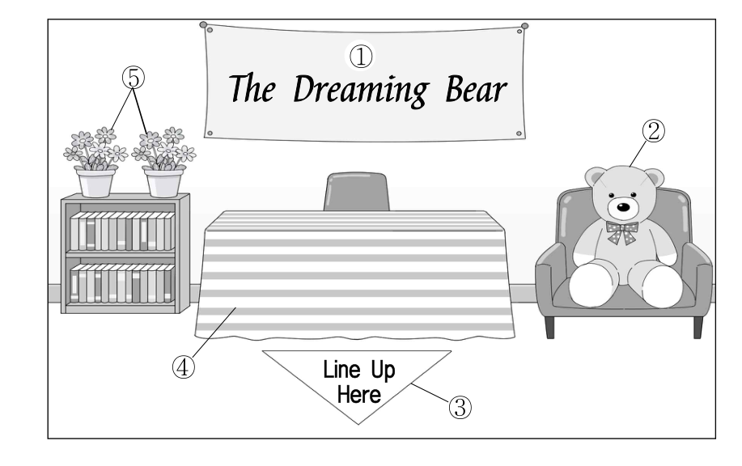
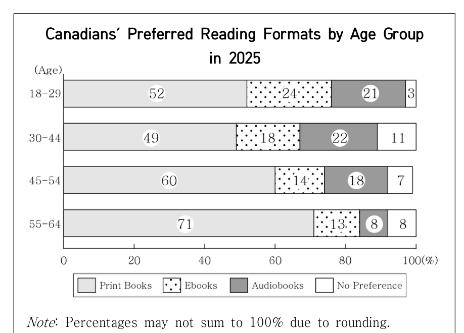

M Attention, students. This is Bradley Carter from the school administration office. I’d like to share an important notice. After school today, workers will be cleaning the outside walls of the school building. During the cleaning process, water may splash around the classroom windows. To prevent water from coming inside, please make sure all classroom windows are completely closed before you leave. If the windows are left open, water may get into the classrooms and cause problems. So don’t forget to shut the windows before heading home today! Thank you for your cooperation.
♪ 다시 듣기
방과 후에 학교 외벽 청소를 하는데, 물이 창문 쪽으로 튈 수 있다고 상황을 설명해요.
그래서 하교 전에 교실 창문을 완전히 닫아 달라고 부탁하고, 마지막에 한 번 더 "don’t forget to shut the windows"라고 강조해요.
목적 문제는 반복되는 부탁·요청 문장이 정답의 근거예요.
함정 피하기
② 외벽 청소는 언급되지만 일정 변경 이야기는 없어요. 소재만 같고 목적이 다른 함정이에요.
정답
③ 하교 시 교실 창문을 닫을 것을 당부하려고
02듣기의견 파악
2. 대화를 듣고, 여자의 의견으로 가장 적절한 것을 고르시오.
♪ 2번 듣기
①배운 것을 보지 않고 백지에 적어 보는 것은 복습에 효과적이다.
②수업 중에 필기한 내용을 교과서를 활용하여 보완해야 한다.
③유명한 학습법이 모든 학습자에게 효과적인 것은 아니다.
④학습한 내용을 더 오래 기억하려면 당일에 복습해야 한다.
⑤이해하기 어려운 과목은 친구들과 함께 복습하면 도움이 된다.
02
해설 — 교과서·노트 없이 백지에 써 보는 복습법
대본 형광펜 = 정답 근거
M Ms. Sydney, can I have a word with you?
W Sure, Fred. What is it?
M Is there a good way to review lessons after class?
W Well, why don’t you put what you learned into writing?
M Could you be more specific?
W Yeah. I mean that you should write down what you learned in class on a blank sheet of paper without looking at the textbook or your notes.
M Will that really work?
W Of course. It’s because while you’re doing that, you can check what you’ve understood or missed.
M I see. I can keep track of what I really learned from the lesson.
W Exactly. That way, you can review effectively.
M I’ll try that. Thank you for your advice.
♪ 다시 듣기
남학생(Fred)이 수업 후 좋은 복습 방법을 물어요.
여자는 "배운 것을 교과서나 노트를 보지 않고 백지에 적어 보라"고 조언해요.
이유: 그렇게 하면 이해한 것과 놓친 것을 확인할 수 있어서 효과적으로 복습할 수 있대요.
함정 피하기
② 교과서·노트는 "보지 말라"고 했어요. 단어(textbook, notes)만 듣고 고르면 틀려요.
정답
①
03듣기요지 파악
3. 다음을 듣고, 남자가 하는 말의 요지로 가장 적절한 것을 고르시오.
♪ 3번 듣기
①상쾌한 아침을 위해 일정한 수면 시간을 유지하는 것이 좋다.
②취침 전 스마트폰 사용은 수면의 질을 떨어뜨릴 수 있다.
③아침 운동은 하루의 집중력을 높이는 데 효과적이다.
④스마트폰의 알람 기능은 효율적인 시간 관리에 도움을 준다.
⑤기상 알람으로 스마트폰보다 실제 시계를 사용하는 것이 좋다.
03
해설 — 스마트폰 알람 대신 "진짜 알람 시계"
대본 형광펜 = 정답 근거
M Hello, listeners. Welcome back to The Digital Balance. Do you use your smartphone as an alarm clock every morning? It’s convenient, but I recommend using an actual clock to start your day feeling more refreshed. If your phone is the first thing you touch, you’re more likely to lie down looking through your phone aimlessly and wasting your time. This can leave you feeling rather lazy even after just waking up. Using an actual alarm clock helps you get out of bed without you becoming distracted by your smartphone. This small shift allows you to kick-start your day without delay. Switch to an actual alarm clock and enjoy a more lively morning.
♪ 다시 듣기
"매일 아침 스마트폰을 알람으로 쓰나요?"라는 질문으로 시작해요.
핵심 주장: 실제 시계(actual clock)를 쓰라. 휴대폰을 먼저 만지면 누워서 휴대폰을 보며 시간을 낭비하기 쉽기 때문이에요.
마지막 문장에서 다시 "Switch to an actual alarm clock"이라고 정리해요 → 요지.
함정 피하기
② 스마트폰 이야기지만 취침 전·수면의 질은 나오지 않아요. ④는 오히려 반대 내용이에요.
정답
⑤
04듣기그림 불일치
4. 대화를 듣고, 그림에서 대화의 내용과 일치하지 않는 것을 고르시오.
♪ 4번 듣기

04
해설 — 바닥 표지판: 대화는 "네모", 그림은 "세모"
대본 형광펜 = 정답 근거
M Hi, Sarah. How did your club’s book signing event go?
W It was great, Andrew! Here’s a photo I took.
M Wow, there’s a banner that says “The Dreaming Bear” on the wall.
W Yeah. That’s the title of the author’s new novel. Do you see the bear on the armchair?
M Yes. It looks so cute.
W A bear is the main character of his new novel.
M Oh, I see. What is the square sign on the floor for?
W It’s for the students to see where to line up.
M That must’ve been helpful. I guess the table was for the author, right?
W Yes. I put the striped table cloth on the table.
M Good choice. I like the two flowerpots on the bookshelf. They lighten up the mood.
W Thank you. The event was a wonderful experience.
♪ 다시 듣기
① 벽의 "The Dreaming Bear" 현수막 → 일치
② 안락의자 위 곰 인형 → 일치
③ 남자가 "square sign on the floor(바닥의 사각형 표지판)"라고 했는데, 그림은 역삼각형 → 불일치
④ 줄무늬(striped) 식탁보 → 일치 ⑤ 책장 위 화분 두 개 → 일치
함정 피하기
그림 문제는 모양(square/round/triangle), 무늬(striped/checked/dotted), 개수(two/three)를 꼭 메모하며 들어요.
정답
③ 바닥 표지판
05듣기할 일
5. 대화를 듣고, 여자가 할 일로 가장 적절한 것을 고르시오.
♪ 5번 듣기
①초대장 보내기
②전구 교체하기
③방명록 준비하기
④포스터 게시하기
⑤방문객 선물 포장하기
05
해설 — 남자의 부탁 → 여자의 "I’ll take care of it."
대본 형광펜 = 정답 근거
W Good morning, Anthony. Our art class exhibition is tomorrow.
M Right, Jessy. I hope visitors enjoy the artwork we’ve created. Let’s make sure everything is ready.
W Okay. I already put up the posters for the exhibition.
M Yeah, I saw them around the school building.
W Did you send invitation letters to the students and teachers?
M Yes. Also, I prepared the guest book and put it at the exhibition entrance.
W Excellent. What else do we need to do?
M Oh, one of the light bulbs in the corner is not working. Can you replace it with a new one?
W I’ll take care of it. What about the welcome gifts for the visitors?
M No worries. I wrapped the gifts and put them in the art classroom.
W Great. I’m sure the exhibition will be a success.
♪ 다시 듣기
포스터 게시 → 여자가 이미 했음(I already put up the posters).
초대장 발송, 방명록 준비 → 남자가 이미 했음.
모퉁이 전구 하나가 안 들어와서 남자가 "새것으로 교체해 줄래?" → 여자: "I’ll take care of it.(내가 할게)"
선물 포장 → 남자가 이미 포장해 둠.
함정 피하기
할 일 문제는 이미 끝난 일(already)을 지워 가며 들어요. 보기 대부분이 "이미 한 일"로 채워져 있어요.
정답
② 전구 교체하기
06듣기금액 계산3점
6. 대화를 듣고, 남자가 지불할 금액을 고르시오.
♪ 6번 듣기
①$17
②$27
③$30
④$37
⑤$40
06
해설 — 기본 $20 + 추가 1세트 $10 − 쿠폰 $3
대본 형광펜 = 정답 근거
W Hello. Welcome to Snap Time. How may I help you?
M Hi. I’d like to have an ID photo taken.
W Sure. We offer two packages. The basic package is $20, and the premium package is $30.
M What’s the difference between the two?
W You’ll get a set of six printed copies for both, but the premium package includes a hair and make-up service.
M I’ll just go with the basic package. I also need more printed copies.
W Of course. You can add them in sets of six. It’s $10 per set.
M Sounds good. I’ll take one more set.
W So, that’s basic package with one extra set of photos, right?
M That’s right. And can I use this coupon?
W Let me see. [Pause] Yes. You’ll get $3 off the total.
M Hey, Christine! Did you see the recent notice about the volunteer work on our school website?
W Hi, Jason. Do you mean the one about the animal shelter this Saturday?
M Yes! I remember you wanted to help out there. I’m planning to go. Want to join?
W I really wish I could, but I’m afraid I can’t this time.
M Why not? Does your dog still need to go to the vet?
W No, my dog has recovered now.
M Good. So you must be busy preparing for your history presentation.
W That’s not it, either. I finished that yesterday.
M Then why can’t you join me with the volunteer work?
W Actually, I have a family trip this weekend to celebrate my mother’s birthday.
M I see. Let’s volunteer together next time.
♪ 다시 듣기
남자가 이유를 추측해요: 강아지 병원? → "No, 이제 다 나았어."
역사 발표 준비? → "That’s not it, either. 어제 끝냈어."
진짜 이유: "Actually, 엄마 생신을 축하하러 이번 주말에 가족 여행이 있어."
함정 피하기
⑤, ②는 남자가 추측했다가 부정된 이유예요. ③ 생일은 나오지만 선물을 사러 간다는 말은 없어요.
정답
① 가족 여행을 가야 해서
08듣기언급 X
8. 대화를 듣고, Quote & Reflection Club에 관해 언급되지 않은 것을 고르시오.
♪ 8번 듣기
①활동 내용
②담당 교사
③모임 장소
④모집 인원
⑤신청 방법
08
해설 — 나온 것 4개를 지우면 남는 것이 정답
대본 형광펜 = 정답 근거
W Hey, Charles! I saw a poster about a new club called the Quote & Reflection Club. I’m going to join it.
M Hey, Olivia! The Quote & Reflection Club? What kind of club is that?
W According to the poster, members copy meaningful quotes from books, write reflections, and share them.
M Sounds interesting. Do you know who’s in charge?
W The English teacher, Mr. Jackson is the club advisor.
M Oh, he’s great. And where does the club meet? In the library?
W No, the club meets in Room 204.
M Good. I’d like to join, too. How can I sign up for it?
W You can submit an application through the school website.
M Got it. I’ll do that right away. Thanks for letting me know.
♪ 다시 듣기
① 활동 내용: 책의 의미 있는 구절 베껴 쓰기, 소감 쓰고 공유 ✔
② 담당 교사: 영어 선생님 Mr. Jackson ✔
③ 모임 장소: 도서관이 아니라 204호 ✔
⑤ 신청 방법: 학교 웹사이트로 신청서 제출 ✔
④ 모집 인원은 한 번도 나오지 않아요.
함정 피하기
언급 문제는 보기가 대화 순서대로 나와요. 들으면서 하나씩 체크!
정답
④ 모집 인원
09듣기내용 불일치
9. Starlight Festival에 관한 다음 내용을 듣고, 일치하지 않는 것을 고르시오.
♪ 9번 듣기
①Big Island에서 매년 개최된다.
②3일 동안 진행된다.
③30개가 넘는 단체가 참여한다.
④모든 방문객은 과학 활동 소책자를 받는다.
⑤사전 예약이 필요하다.
09
해설 — "Reservation in advance is not required"
대본 형광펜 = 정답 근거
W Hello, everyone. Are you interested in astronomy and space science? Then don’t miss Starlight Festival! It’s an annual event taking place on the Big Island. This year’s event will be held for three days, from October 30 to November 1. Our event has expanded compared to last year. More than 30 organizations will participate in the event to offer an exciting experience. All visitors will receive a science activity booklet. Young visitors under the age of 12 can enjoy our special rocket-making class. Reservation in advance is not required so feel free to come and enjoy our Starlight Festival! For more information, please visit our website.
♪ 다시 듣기
① annual event on the Big Island → 일치
② three days (10/30 ~ 11/1) → 일치
③ More than 30 organizations → 일치
④ All visitors will receive a science activity booklet → 일치
⑤ 사전 예약은 필요 없다(not required) → 불일치
함정 피하기
not 하나로 정답이 갈려요. 마지막 부분 "feel free to come(편하게 오세요)"도 예약이 필요 없다는 힌트예요.
정답
⑤ 사전 예약이 필요하다.
10듣기도표 선택
10. 다음 표를 보면서 대화를 듣고, 두 사람이 구입할 캣 타워를 고르시오.
♪ 10번 듣기
Model
Price
Number of Levels
Material
Hammock
①
A
$105
3
Cardboard
×
②
B
$130
4
Plastic
×
③
C
$155
4
Metal
○
④
D
$180
5
Wood
○
⑤
E
$210
5
Fabric
○
10
해설 — 조건 4개로 하나씩 지우기
대본 형광펜 = 정답 근거
W Honey, what are you looking at?
M It’s a list of cat towers for our cat, Leo. Can you help me choose one?
W Sure. I don’t think we should spend more than $200.
M I agree. That’s too expensive. What about the number of levels? Leo loves climbing high.
W Then three levels won’t be enough. The tower should have at least four.
M Okay, let’s cross out that one. As for the material, metal might feel too cold. Leo would prefer other materials.
W Good point. Now we are down to two choices. Should we get one with a hammock?
M Definitely. Leo loves napping in cozy places, so a hammock is a must.
W Then this model is perfect for Leo.
M Great. Let’s buy it.
♪ 다시 듣기
가격: $200 이하 → E($210) ✕
층수: 최소 4층 → A(3층) ✕
재질: 금속은 차가움 → C(Metal) ✕
해먹: 꼭 있어야 함 → B(×) ✕ → 남은 것은 D
모델
가격
층
재질
해먹
A
105
3
Cardboard
×
✕
B
130
4
Plastic
×
✕
C
155
4
Metal
○
✕
D
180
5
Wood
○
★
E
210
5
Fabric
○
✕
함정 피하기
"Let’s cross out that one"처럼 지시어로 말하니, 조건이 나올 때마다 표에 바로 ✕를 쳐요.
정답
④ Model D
11듣기짧은 응답3점
11. 대화를 듣고, 남자의 마지막 말에 대한 여자의 응답으로 가장 적절한 것을 고르시오.
♪ 11번 듣기
①It went well. The food we prepared was all sold out.
②Our booth has a big blue banner. You can’t miss it.
③I know. But the food booth doesn’t need any help.
④That’s easy. I’ll help you with the booth decorations.
⑤I’m glad you can come. Just avoid coming on Saturday.
11
해설 — "부스 많은데 너를 어떻게 찾아?" → 찾는 방법
대본 형광펜 = 정답 근거
M Emily, you’re helping out at the school festival this weekend, aren’t you?
W Yes, I’ll be helping at a food booth on Saturday.
M I’d love to stop by and see you there. How can I find you among all the booths?
W:
♪ 다시 듣기
여자는 이번 주말 학교 축제 음식 부스에서 도와요(토요일).
남자의 마지막 말: "그 많은 부스 중에서 너를 어떻게 찾을 수 있어?"
→ 찾는 방법을 알려 주는 ② "우리 부스에는 큰 파란 현수막이 있어. 못 찾을 리 없어."
함정 피하기
① 축제는 아직 열리지 않았어요(과거형 ✕). ⑤ 여자는 토요일에 있으니 토요일을 피하라는 건 앞뒤가 안 맞아요.
정답
②
12듣기짧은 응답
12. 대화를 듣고, 여자의 마지막 말에 대한 남자의 응답으로 가장 적절한 것을 고르시오.
♪ 12번 듣기
①Of course. I already watched it last week.
②Not yet. The movie will be released this weekend.
③Really? Then I’d better check if there’s a seat available.
④You’re right. The ticket price is not at all reasonable.
⑤Not so nice. I should’ve checked the movie review.
12
해설 — "예매했어? 친구는 매진돼서 못 봤어" → 좌석 확인
대본 형광펜 = 정답 근거
W Harry, I saw the movie Running in the Wind last Sunday, and it was great.
M Really? I haven’t watched it yet, but I’m planning to go watch the movie tonight.
W Did you reserve the ticket? My friend went to the theater yesterday without booking, but all the tickets were sold out.
M:
♪ 다시 듣기
남자는 오늘 밤 그 영화를 보러 갈 계획이에요.
여자: "표 예매했어? 내 친구는 어제 예매 없이 갔다가 표가 다 매진이었어."
→ ③ "정말? 그럼 남은 자리가 있는지 확인해 봐야겠다."
함정 피하기
① 남자는 아직 안 봤어요. ② 영화는 이미 개봉했어요(여자가 지난 일요일에 봤음).
정답
③
13듣기긴 응답
13. 대화를 듣고, 남자의 마지막 말에 대한 여자의 응답으로 가장 적절한 것을 고르시오.
♪ 13번 듣기
①Sure. I’ll make a poster about the bicycle parking issue.
②Never mind. I’ve already found the parking zone.
③Well, this is my first time making a poster.
④That’s okay. I’ll show you how to ride a bicycle.
⑤I agree. Let’s hang up the completed posters first.
13
해설 — "포스터 하나 만들어 줄래?" → "물론!"
대본 형광펜 = 정답 근거
W Hey, Evan. Did you see all the bicycles parked everywhere at school?
M Hey, Esther. Yes, many students leave them there. It looks messy and it’s quite unsafe.
W Exactly. They should park them in the designated bicycle parking area.
M Why don’t we make some posters to inform students about the issue?
W Great idea! Count me in.
M Thanks. Then, we need something that draws students’ attention.
W True. An eye-catching design would make the poster effective.
M Aren’t you good at designing? I loved the poster you made before.
W Yeah. Actually I already have some really good design ideas for the poster.
M Awesome. Then can you make one for our school?
W:
♪ 다시 듣기
학교 곳곳에 아무렇게나 세운 자전거가 문제 → 지정 주차 구역 안내 포스터를 만들자고 해요.
여자는 디자인을 잘하고, 이미 좋은 디자인 아이디어도 있대요.
남자: "그럼 우리 학교를 위해 하나 만들어 줄 수 있어?" → ① "물론. 자전거 주차 문제에 대한 포스터를 만들게."
함정 피하기
③ 여자는 전에 만든 포스터가 있어요(첫 번째가 아님). ⑤ 아직 완성된 포스터가 없어요.
정답
①
14듣기긴 응답3점
14. 대화를 듣고, 여자의 마지막 말에 대한 남자의 응답으로 가장 적절한 것을 고르시오.
♪ 14번 듣기
①That’s a relief. I’m glad the slides were clear enough.
②I’m sorry. I’ll make sure it doesn’t happen again.
③Don’t worry. I’ve already connected my laptop.
④My goodness. I forgot to reply to your message.
⑤Good idea. Let’s open a chat room to fix the schedule.
14
해설 — "다음엔 더 조심해" → 사과 + 재발 방지
대본 형광펜 = 정답 근거
W Mark, good job on your presentation.
M Thanks, Claire. I worked really hard on it.
W It looked like it. But actually, I need to tell you something.
M Sure. What is it?
W It seemed you didn’t turn off your chat alerts before mirroring your laptop to the main screen.
M Oh, my. I was so focused on my presentation that I didn’t notice the alerts on the screen.
W I understand. But your personal chat notifications popped up a couple of times.
M Really? Did everyone notice that?
W Unfortunately, yes. We could see the message previews in the notification.
M Oh, dear! I had absolutely no idea.
W I thought so. Try to be more cautious next time.
M:
♪ 다시 듣기
발표 중 노트북 화면을 띄웠는데 채팅 알림을 끄지 않아 개인 메시지 미리보기가 모두에게 보였어요.
여자의 마지막 말: "다음번엔 더 조심하도록 해."
→ ② "미안해. 다시는 이런 일이 없도록 할게."
함정 피하기
① 안도할 상황이 아니에요. ④ 메시지에 답장을 안 한 게 문제가 아니라 알림이 화면에 뜬 게 문제예요.
정답
②
15듣기상황 응답
15. 다음 상황 설명을 듣고, Emma가 Sophia에게 할 말로 가장 적절한 것을 고르시오.
♪ 15번 듣기
①How about traveling separately for a few hours a day?
②We should book the museum program in advance.
③Why don’t we start our trip a few days earlier?
④We can skip all the landmarks and go shopping together.
⑤Let’s check out the places that you recommended before.
15
해설 — "하루 몇 시간씩 따로 다니자"
대본 형광펜 = 정답 근거
M Emma and Sophia are close friends who are traveling together during their vacation. They are excited because it is their first trip together. However, a few days into the trip, they realize that they have completely different travel preferences. Emma enjoys shopping, while Sophia prefers visiting museums and famous landmarks. As a result, they spend a lot of time waiting for each other and they gradually become frustrated. Emma wants both of them to enjoy the rest of the trip stress free. So she wants to suggest to Sophia that they should spend a few hours apart each day doing what they each want to do. In this situation, what would Emma most likely say to Sophia?
Emma:
♪ 다시 듣기
Emma는 쇼핑, Sophia는 박물관·명소를 좋아해서 서로 기다리느라 지쳐 가요.
Emma는 남은 여행을 둘 다 스트레스 없이 즐기고 싶어요.
그래서 "매일 몇 시간은 떨어져서 각자 하고 싶은 걸 하자"고 제안하려 해요 → ① separately for a few hours a day
함정 피하기
상황 문제는 마지막 "So she wants to suggest ~" 문장이 거의 정답이에요. ④는 Sophia가 좋아하는 명소를 다 빼자는 말이라 ✕.
정답
①
16듣기주제
[16~17] 다음을 듣고, 물음에 답하시오. 16. 여자가 하는 말의 주제로 가장 적절한 것은?
♪ 16~17번 듣기 (두 번 들려줘요)
①examples of universal design applied in clothing
②parts of clothing that were invented by accident
③clothing designs universally preferred by designers
④unique parts of traditional clothing in different cultures
⑤universal design features that are falling out of use today
16
해설 — 옷에 적용된 유니버설 디자인의 예
대본 형광펜 = 정답 근거
W Hello, students. Last time, we learned what universal design is. But, did you know that universal design is also widely applied in parts of our clothing? First, let’s start with buttons. Some shirts use magnetic buttons that make it easier for people with weak hand strength to get dressed without assistance. Second, some waistbands are made in a way that people can adjust them. These adjustable waistbands can be helpful for pregnant women. Third, we also have some zippers that are easier to hold and pull. Easy-grip zippers make it possible for anyone to zip up a jacket effortlessly. Finally, there are labels. Some clothes use soft labels which are made of special fabric. They help reduce skin irritation for people with sensitive skin. These parts of clothing which reflect universal design make clothing more accessible for everyone. Now let’s watch a video.
♪ 다시 듣기
도입: "유니버설 디자인이 옷의 여러 부분에도 널리 적용된다는 것을 알았나요?"
First 단추 → Second 허리밴드 → Third 지퍼 → Finally 라벨: 모두 예시예요.
정리: 이런 부분들이 옷을 모두에게 더 접근하기 쉽게 만든다 → ① examples of universal design applied in clothing
함정 피하기
③ universally(보편적으로)는 단어만 비슷한 함정. ② 우연히 발명된 이야기는 없어요.
정답
①
17듣기언급 X
[16~17] 다음을 듣고, 물음에 답하시오. 17. 언급된 요소가 아닌 것은?
♪ 16~17번 듣기 (두 번 들려줘요)
①buttons
②waistbands
③zippers
④pockets
⑤labels
17
해설 — First · Second · Third · Finally 네 개만 나와요
대본 형광펜 = 정답 근거
W Hello, students. Last time, we learned what universal design is. But, did you know that universal design is also widely applied in parts of our clothing? First, let’s start with buttons. Some shirts use magnetic buttons that make it easier for people with weak hand strength to get dressed without assistance. Second, some waistbands are made in a way that people can adjust them. These adjustable waistbands can be helpful for pregnant women. Third, we also have some zippers that are easier to hold and pull. Easy-grip zippers make it possible for anyone to zip up a jacket effortlessly. Finally, there are labels. Some clothes use soft labels which are made of special fabric. They help reduce skin irritation for people with sensitive skin. These parts of clothing which reflect universal design make clothing more accessible for everyone. Now let’s watch a video.
♪ 다시 듣기
① buttons: 자석 단추 – 손 힘이 약한 사람도 혼자 옷을 입을 수 있음
② waistbands: 조절 가능한 허리밴드 – 임신부에게 도움
③ zippers: 잡기 쉬운 지퍼 – 누구나 쉽게 올림
⑤ labels: 부드러운 라벨 – 민감한 피부의 자극을 줄임
④ pockets(주머니)는 나오지 않아요.
함정 피하기
16·17번은 두 번 들려줘요. 첫 번째에 주제, 두 번째에 언급된 것을 체크하면 좋아요.
정답
④ pockets
18독해글의 목적
18. 다음 글의 목적으로 가장 적절한 것은?
Thank you for always ordering pies from our bakery for your special occasions. We truly appreciate your continued support and always try to provide pies of the highest quality. Unfortunately, we are writing to inform you that we are unable to prepare the apple pie you’ve ordered for the upcoming birthday celebration. Due to a delayed apple harvest this season, we are currently experiencing difficulties sourcing fresh apples. As a result, we are unable to fulfill the order that you’ve requested. We sincerely apologize for this situation. We appreciate your understanding and look forward to serving you again in the future.
①사과파이 주문 방법을 공지하려고
②사과파이 특별 할인 행사를 홍보하려고
③주문 취소에 따른 환불 절차를 설명하려고
④주문 변경에 따른 추가 요금을 안내하려고
⑤주문한 사과파이를 제공할 수 없음을 알리려고
18
해설 — "Unfortunately, ~" 뒤가 목적이에요
전체 해석
당신의 특별한 행사에 항상 저희 제과점에서 파이를 주문해 주셔서 감사합니다. 저희는 당신의 지속적인 성원에 진심으로 감사드리며, 항상 최고 품질의 파이를 제공하려고 노력합니다. 안타깝게도, 저희는 곧 있을 생일 축하 행사를 위해 당신이 주문한 사과파이를 준비할 수 없다는 것을 알리고자 편지를 씁니다. 이번 시즌 늦어진 사과 수확으로 인해, 저희는 현재 신선한 사과를 조달하는 데 어려움을 겪고 있습니다. 그 결과, 당신이 요청하셨던 주문을 이행할 수 없습니다. 이 상황에 대해 진심으로 사과드립니다. 이해해 주셔서 감사드리며, 앞으로도 당신을 다시 응대할 수 있기를 기대합니다.
처음 두 문장은 감사 인사예요(늘 주문해 주셔서 감사합니다). 편지글은 인사 뒤에 진짜 용건이 나와요.
Unfortunately, we are writing to inform you that we are unable to prepare the apple pie you’ve ordered → "주문하신 사과파이를 준비할 수 없음을 알려 드리려고 편지를 씁니다."
이유: 사과 수확이 늦어져 신선한 사과를 구하기 어려움 → 그래서 주문을 이행할 수 없음(unable to fulfill the order).
마지막은 사과(apologize)와 감사로 마무리 → 목적은 ⑤ 주문한 사과파이를 제공할 수 없음을 알리려고.
핵심 포인트
편지·이메일의 목적은 Unfortunately / I am writing to ~ / I would like to ~ 뒤에 나와요.
함정 피하기
③ 환불 절차, ④ 추가 요금 이야기는 전혀 없어요.
정답
⑤ 주문한 사과파이를 제공할 수 없음을 알리려고
19독해심경 변화
19. 다음 글에 드러난 Dan의 심경 변화로 가장 적절한 것은?
The night had finally arrived. It was the night to take a photo of the Milky Way. Dan had been checking the weather and searching for the perfect location. As he drove to the spot, he couldn’t stop smiling and his heart raced with anticipation. However, when he arrived, dark clouds began to cover the sky. Within minutes, every star disappeared behind the thick clouds. Dan waited for over an hour, checking his weather app constantly. Even worse, it started to rain. He lowered his head, letting out a loud sigh. He could do nothing but drive back home, downhearted.
①excited → disappointed
②anxious → relieved
③terrified → indifferent
④bored → delighted
⑤relaxed → grateful
19
해설 — However를 기준으로 "설렘 → 낙담"
전체 해석
마침내 그 밤이 되었다. 은하수 사진을 찍는 밤이었다. Dan은 날씨를 확인해 왔고 최적의 장소를 조사해 왔다. 그는 그 장소로 운전해 가면서 미소를 멈출 수 없었고, 기대감에 그의 심장이 마구 뛰었다. 그러나 그가 도착했을 때, 먹구름이 하늘을 덮기 시작했다. 몇 분 안에 모든 별이 짙은 구름 뒤로 사라졌다. Dan은 자신의 날씨 앱을 끊임없이 확인하면서 한 시간이 넘도록 기다렸다. 설상가상으로, 비가 내리기 시작했다. 그는 큰 한숨을 내쉬면서 고개를 숙였다. 그는 낙담한 채 집으로 운전해 돌아가는 것 외에는 아무것도 할 수 없었다.
앞부분: 은하수 사진을 찍는 날 밤. "couldn’t stop smiling(웃음을 멈출 수 없었다)", "heart raced with anticipation(기대감에 심장이 뛰었다)" → excited(신난)
However로 분위기가 바뀌어요: 먹구름이 하늘을 덮고, 별이 모두 사라지고, 비까지 내려요.
뒷부분: "lowered his head(고개를 숙였다)", "a loud sigh(큰 한숨)", "downhearted(낙담한)" → disappointed(실망한)
따라서 ① excited → disappointed
핵심 포인트
심경 변화는 However / But 같은 전환어 앞뒤의 감정 표현(표정·행동·형용사)을 찾아요.
함정 피하기
② anxious(불안한)는 처음 감정과 맞지 않아요. Dan은 걱정이 아니라 기대에 차 있었어요.
정답
① excited → disappointed
20독해필자의 주장
20. 다음 글에서 필자가 주장하는 바로 가장 적절한 것은?
Did you know that shadows are the color of the sky? That counterintuitive reality reminds us that preconceived notions, bias, and prejudice color our view of the world. One profound habit of thinking individuals is to first acknowledge their biases and then intentionally overcome them. Asking challenging questions can help. Passionately argue an issue from the opposite point of view, and ask probing and difficult questions that challenge your original stance. Be brutally honest and see what’s actually there rather than what’s expected. Get in the habit of asking, “Do I really know?” and refuse to accept assertions blindly. Challenge everything and everyone — including your teachers. Don’t be intimidated. You are the best authority on what you don’t understand — trust yourself: don’t be afraid to ask the questions you need to ask, and be brave enough to change your thinking when you uncover a blind spot.
* counterintuitive: 반(反)직관적인 ** probing: 속을 캐 보는 *** stance: 입장
①논쟁을 할 때 상대방의 입장에서 생각하는 습관을 들여야 한다.
②자신의 기존 생각에 안주하지 말고 끊임없이 질문해야 한다.
③지식의 오류를 줄이기 위해 권위자의 의견을 존중해야 한다.
④타인의 비판에 위축되지 말고 자신의 직관을 믿어야 한다.
⑤편향을 극복하기 위해서는 객관적인 통계 자료를 확인해야 한다.
20
해설 — 편향을 깨려면 "질문하라"
전체 해석
그림자가 하늘의 색이라는 것을 알았는가? 그 반직관적인 현실은 미리 형성된 개념, 편향, 그리고 편견이 세상에 대한 우리의 관점을 물들인다는 점을 우리에게 상기시킨다. 사고하는 사람의 한 가지 심오한 습관은 먼저 자신의 편향들을 인정하고 이후에 그것들을 의도적으로 극복한다는 것이다. 도전적인 질문을 하는 것이 도움이 될 수 있다. 어떤 문제에 대해 반대 관점에서 열정적으로 논쟁하고, 여러분의 원래 입장에 이의를 제기하는, 속을 캐 보는 그리고 어려운 질문을 하라. 잔인하다 싶을 정도로 솔직하라, 그리고 예상되는 것보다는 거기에 실제로 무엇이 있는지 보라. “내가 정말 ‘아는가’?”라고 묻는 습관을 들이고, 주장을 맹목적으로 받아들이기를 거부하라. 모든 것 그리고 여러분의 선생님을 포함한 모든 사람에게 이의를 제기하라. 위축되지 마라. 여러분은 자신이 이해하지 못하는 것에 대한 최고의 권위자이며, 자신을 믿어라. 여러분이 해야 하는 질문을 하기를 두려워하지 말고, 여러분이 맹점을 알아냈을 때 자기 생각을 바꿀 만큼 용감하라.
도입: 그림자가 하늘색이라는 반직관적 사실 → 우리의 선입견·편향이 세상을 보는 눈을 물들인다.
핵심: 생각하는 사람은 편향을 인정하고 극복한다. Asking challenging questions can help.(도전적인 질문이 도움이 된다)
이후 명령문이 쭉 이어져요: 원래 입장에 이의를 제기하는 질문을 하라, "내가 정말 아는가?"라고 물어라, 모든 것에 이의를 제기하라, 질문을 두려워하지 마라.
→ ② 자신의 기존 생각에 안주하지 말고 끊임없이 질문해야 한다.
핵심 포인트
주장 문제는 명령문(~하라)과 should가 몰린 곳이 핵심이에요.
함정 피하기
① 반대 관점에서 논쟁하라는 말은 질문하기 위한 방법 중 하나일 뿐이에요. ③은 "선생님에게도 이의를 제기하라"와 정반대예요.
정답
②
21독해함축 의미3점
21. 밑줄 친 “develops the photograph” of the original text가 다음 글에서 의미하는 바로 가장 적절한 것은?
All the philosophical dilemmas about whether translation “reflects” or instead “transforms” what’s in the original need to be swept aside. This is exactly the dichotomy that Merleau-Ponty’s account of perception is trying to free us from: are we “seeing” objects or “constituting” them? Neither, because we perceive things in a world we live in and have the power to transform: a chair is something we can go sit in; a mug is something we can pick up. One of Merleau-Ponty’s many great metaphors is that perception neither finds the world nor creates it: it reveals it, which he expresses using the term révélateur, the developing fluid for photographs in a darkroom. The act of seeing develops what’s in the world, like developing a photograph. Likewise, a translation “develops the photograph” of the original text. Translators don’t simply “recognize” what’s there, but nor are we “changing” it into anything it isn’t already, though we can be more or less aggressively interventionist in our darkroom. As a translator I take up the affordances of the original, moving through its world and constantly invited to respond in certain ways.
* dichotomy: 이분법 ** affordance: 행위유발성
①brings into view what already exists without inventing anything new
②invents ideologically driven values that are not grounded in the original
③provides detailed background information of the original text to enhance reader comprehension
④introduces a completely new interpretation that appeals to the target readers
⑤exploits a work of art in order to convey the translator’s perspectives
21
해설 — 사진 "현상" = 이미 있는 것을 드러내기
전체 해석
번역이 원본에 있는 것을 ‘반영하는’지 혹은 대신에 ‘변형하는’지에 관한 모든 철학적 딜레마는 완전히 무시해야 한다. 이것이 Merleau-Ponty의 지각에 대한 설명이 우리를 해방하려 하는 바로 그 이분법인데, 우리는 사물을 ‘보고’ 있는가 혹은 그것을 ‘구성하고’ 있는가? 둘 다 아닌데, 우리는 우리가 살고 있는 세상 속에서 사물을 지각하고 변형하는 힘을 가지고 있기 때문이다. 의자는 우리가 가서 앉을 수 있는 어떤 것이고, 머그잔은 우리가 집을 수 있는 어떤 것이다. Merleau-Ponty의 여러 뛰어난 비유 가운데 하나는 지각은 세상을 발견하지도 않고 창조하지도 않는다는 것인데, 즉 그것(지각)은 그것(세상)을 드러내며, 그는 이를 ‘révélateur’, 즉 암실의 사진용 현상액이라는 용어를 사용하여 표현한다. 보는 행위는 사진을 현상하듯 세상 속에 있는 것을 ‘현상한다’. 마찬가지로, 번역은 원문의 ‘사진을 현상한다.’ 번역가는 거기에 있는 것을 그저 ‘인지하지’ 않고, 우리는 그것을 그것이 이미 존재하지 않는 어떤 것으로 ‘바꾸지’도 않는데, 비록 우리는 우리의 암실에서 더 혹은 덜 공격적으로 개입주의적일 수 있지만 말이다. 나는 번역가로서 원본의 행위유발성을 받아들이고, 그것의 세상 속에서 움직이며 특정한 방식으로 응답하도록 끊임없이 요청받는다.
비유의 출발: 지각은 세상을 발견하지도(find), 창조하지도(create) 않고, 드러낸다(reveal). 이것을 암실의 사진 현상액(révélateur)에 빗대요.
사진을 현상하면 필름에 이미 찍혀 있던 상이 눈에 보이게 돼요. 없는 것을 새로 그려 넣지 않아요.
번역도 마찬가지: 번역가는 원문을 그냥 "인식"만 하지도 않고, 원문을 원래 아닌 것으로 "바꾸지"도 않아요.
→ ① 새로운 것을 지어내지 않고 이미 존재하는 것을 보이게 한다
핵심 포인트
함축 의미는 밑줄 바로 앞뒤 문장(Likewise ~ / Translators don’t ~)에서 풀어 설명해 줘요.
함정 피하기
②④⑤는 번역가가 새것을 만들어 낸다(invent, completely new)는 뜻 → "changing it into anything it isn’t already"와 반대.
정답
①
22독해글의 요지
22. 다음 글의 요지로 가장 적절한 것은?
In some ways, we are more eager to track down and recover knowledge from the distant past than ever. New storage technologies make it possible to preserve texts, images, and music at minimal cost, and social media have made it simpler to share this stored content more widely than ever before. Never have previously produced cultural artifacts and practices been as readily available to as many people as they are now. Yet, amid this digital abundance of cultural content, older file formats, websites, and entire databases are becoming unreadable at a frightening speed, raising the question of whether we’re really so much better at preserving the past than our ancestors were. And while the technologies of cultural storage and distribution have changed, the laws governing how culture works — how it is preserved, transmitted, exchanged, and recovered — haven’t. The interplay of preservation and destruction, of loss and recovery, of error and adaptation continues unabated in a world that has put almost all human cultures in constant contact.
* cultural artifact: 문화 유물 ** unabated: 약해지지 않는
①디지털 콘텐츠의 공유는 문화 정체성을 약화시킨다.
②디지털 기술을 통해 콘텐츠 저장 비용을 절감할 수 있다.
③디지털 기술이 발전해도 문화 보존과 소실의 문제는 남아 있다.
④소셜 미디어는 콘텐츠를 재생산하여 문화 전파를 촉진한다.
⑤문화 콘텐츠 보존을 위해 원작자의 권리 강화가 필요하다.
22
해설 — Yet 뒤: 기술은 바뀌어도 "보존과 소실"은 계속
전체 해석
어떤 면에서는, 우리는 그 어느 때보다 먼 과거에서 지식을 찾아내고 되찾는 데 더욱 열심이다. 새로운 저장 기술은 최소 비용으로 텍스트, 이미지, 그리고 음악을 보존하는 것을 가능하게 하고, 소셜 미디어는 이 저장된 콘텐츠를 이전 그 어느 때보다도 더 널리 공유하는 것을 더 간단하게 만들었다. 이전에 만들어진 문화 유물과 관습을 지금처럼 많은 사람이 손쉽게 이용할 수 있던 적은 결코 없었다. 그러나, 문화 콘텐츠의 이러한 디지털 풍요 가운데에, 더 오래된 파일 형식, 웹사이트, 그리고 데이터베이스 전체는 무서운 속도로 읽을 수 없는 상태가 되어, 우리가 정말 우리의 조상보다 과거를 보존하는 것에 있어 훨씬 더 나은지에 관한 의문을 제기한다. 그리고 문화의 저장과 배포의 기술은 바뀌었지만, 문화가 작용하는 방식, 즉 그것이 보존되고, 전파되고, 교환되고, 그리고 복원되는 방식을 지배하는 법칙은 변하지 않았다. 보존과 파괴, 상실과 복구, 오류와 적응 사이의 상호 작용은 거의 모든 인간 문화가 끊임없이 서로 접촉하도록 두는 세상에서 약해지지 않고 계속된다.
앞부분(양보): 새 저장 기술과 소셜 미디어 덕분에 과거 문화를 그 어느 때보다 쉽게 보존·공유할 수 있어요.
Yet(그러나): 오래된 파일 형식·웹사이트·데이터베이스가 무서운 속도로 읽을 수 없게 되고 있어요.
기술은 바뀌었지만 문화가 보존·전파·복원되는 법칙은 바뀌지 않았다. 보존과 파괴, 상실과 복구의 상호 작용은 계속된다(continues unabated).
→ ③ 디지털 기술이 발전해도 문화 보존과 소실의 문제는 남아 있다.
핵심 포인트
In some ways ~ Yet ~ 구조: 앞은 일반적인 생각, Yet 뒤가 필자의 요지예요.
함정 피하기
② 저장 비용 절감은 앞부분의 세부 내용일 뿐, 글 전체의 요지가 아니에요.
정답
③
23독해글의 주제
23. 다음 글의 주제로 가장 적절한 것은?
We use space, eye contact, and touch to communicate positive and negative attitudes toward others. These signals can reflect and regulate the intimacy in a relationship. In one interesting application of this idea, researchers found that nonverbal intimacy regulation even occurs when people interact with others via avatars in online environments. As in face-to-face encounters, people typically respond to decreased distances by compensating with reduced gaze. But we should keep in mind what communication scholar Mark Knapp has pointed out: These stereotypical immediacy behaviors — close distances, eye contact, touch, body lean, and so forth — are more evident during the early stages of intimacy than they are during later stages. When people become comfortable with each other, they may become more selective in their use of nonverbal immediacy signals, using them during a personal crisis, after a fight, on special occasions, at particular social gatherings, and the like. They may also adopt other more idiosyncratic ways of showing their affection — a unique gesture or a special touch, for instance — and they may feel less obliged overall to display their affections in public.
* idiosyncratic: 특이한
①the role of positive attitudes in overcoming conflicts
②the influence of maintaining eye contact in communication
③the use of nonverbals to signal the current status of relationships
④the effects of physical distance on interpersonal relationships
⑤the benefits of online interaction over in-person conversation
23
해설 — 비언어 신호는 "관계가 지금 어느 단계인지"를 보여 준다
전체 해석
우리는 상대에게 긍정적 그리고 부정적인 태도를 전달하기 위해 간격, 눈 맞춤 그리고 접촉을 이용한다. 이러한 신호들은 관계 속에서 친밀감을 반영하고 조절할 수 있다. 이 개념의 한 흥미로운 적용에서, 연구자들은 사람들이 온라인 환경에서 다른 사람들과 아바타를 통해 상호 작용을 할 때조차도 비언어적 친밀감 조절이 일어난다는 것을 알아냈다. 대면 접촉에서와 마찬가지로, 사람들은 일반적으로 줄어든 거리에 줄어든 시선으로 보정하여 반응한다. 그러나 우리는 커뮤니케이션 학자 Mark Knapp이 지적한 것을 명심해야 하는데, 이러한 전형적인 친근성 행동, 즉 가까운 거리, 눈 맞춤, 접촉, 몸의 기울임 등등은 친밀감의 나중 단계에서보다 초기 단계에서 더 분명하다. 사람들이 서로 편해지면, 그들의 비언어적 친근성 신호의 사용에 있어 더 까다로워질 수도 있으며, 개인적인 위기 도중, 싸우고 난 후, 특별한 기념일에, 특정한 사회적 모임에서, 그리고 그 비슷한 상황에서 그것을 사용한다. 그들은 또한 자신의 애정을 표현하는 다른 더 특이한 방식, 예를 들어 독특한 몸짓이나 특별한 접촉을 택할 수도 있고, 사람들이 있는 데서 애정을 드러내야 한다는 의무감을 전반적으로 덜 느낄 수도 있다.
첫 두 문장이 주제문: 우리는 간격·눈 맞춤·접촉(비언어 신호)으로 태도를 전달하고, 이 신호들은 관계의 친밀감을 반영하고 조절한다.
예 1: 온라인 아바타끼리도 거리가 가까워지면 시선을 줄여 친밀감을 조절한다.
예 2(Knapp): 이런 행동은 친밀감의 초기 단계에서 더 뚜렷하고, 편해지면 더 선택적으로·독특한 방식으로 쓴다.
즉, 비언어 신호의 사용은 관계가 현재 어떤 상태인지에 따라 달라지고 그것을 드러낸다 → ③
핵심 포인트
nonverbal(비언어) + relationship(관계) + stage(단계)를 모두 담은 보기를 고르면 돼요.
함정 피하기
② 눈 맞춤, ④ 물리적 거리는 비언어 신호 중 일부만 말해요(너무 좁음). ⑤ 온라인이 더 낫다는 비교는 없어요.
정답
③
24독해글의 제목
24. 다음 글의 제목으로 가장 적절한 것은?
In many situations, corporate moral decisions do not entail a trade-off: doing the right thing is sometimes good for business. Legal scholar Lucian Bebchuk calls this type of reasoning “instrumental stakeholderism.” Making stakeholders (customers, the community, employees, and so on) happy, even if it costs a little, may be in the interest of shareholders. For Bebchuk, such situations do not pose a challenge to economist Milton Friedman’s view that managers should aim at maximizing profits. Giving an extra week of paid vacation or long maternity leave may help attract the most talented young college graduates. Sourcing inputs responsibly may appeal to millennial consumers who are concerned with the environment. Being more environmentally conscious than what current standards require might give a leading edge if one anticipates that regulations will become tighter in the near term. Morality can be seen in such cases as an instrument for (current and long-term) profits, not necessarily as a goal for its own sake.
* stakeholder: 이해관계자 ** maternity leave: 출산 휴가
①Regulating Business for Sustainability and Its Limitations
②When Goodness Pays Off: The Strategic Side of Ethics
③Why Does Profit Maximization Still Come First?
④Handling Conflicts: Personal Values vs. Work Ethics
⑤How Trends Are Reshaping Young Consumers’ Behaviors
24
해설 — 착한 일이 돈이 된다 = 윤리의 전략적 측면
전체 해석
많은 상황에서 기업의 윤리적 결정은 타협을 위한 거래를 수반하지 않는데, 옳은 일을 하는 것이 때로는 사업에 도움이 된다. 법학자 Lucian Bebchuk은 이러한 유형의 추론을 ‘수단적 이해관계자주의’라고 부른다. (고객, 지역 사회, 직원 등) 이해관계자를 행복하게 하는 것은, 비록 비용이 약간 들더라도, 주주를 위한 것일 수도 있다. Bebchuk에게 있어 그러한 상황은 경영자가 이익을 극대화하는 것을 목표로 해야 한다는 경제학자 Milton Friedman의 견해에 이의를 제기하지 않는다. 일주일의 추가 유급 휴가나 긴 출산 휴가를 주는 것은 가장 유능한 젊은 대학 졸업생들을 유치하는 데 도움이 될 수도 있다. 원자재를 책임감 있게 조달하는 것은 환경을 생각하는 밀레니얼 세대 소비자들의 관심을 끌 수도 있다. 현재 기준이 요구하는 것보다 더 환경에 특별한 관심이 있는 것은, 가까운 시일 내에 규제가 더 엄격해질 것이라고 예상한다면, 선제적 우위를 줄 수 있다. 그러한 경우에 도덕성은, 반드시 그 자체를 위한 목표가 아닌 (현재와 장기적인) 이익을 위한 수단으로 볼 수 있다.
첫 문장: 기업의 도덕적 결정은 손해를 감수하는 거래가 아닐 때가 많다 — 옳은 일을 하는 것이 사업에 도움이 된다.
예시 3개: 유급 휴가·출산 휴가 → 인재 유치 / 책임 있는 원자재 조달 → 환경을 생각하는 소비자의 관심 / 기준보다 친환경 → 규제 강화 시 선제적 우위
결론: 도덕성은 그 자체가 목표라기보다 이익을 위한 수단(instrument)으로 볼 수 있다.
→ ② When Goodness Pays Off(선함이 이득이 될 때): The Strategic Side of Ethics(윤리의 전략적 측면)
핵심 포인트
pay off = 성과를 내다, 이득이 되다. 제목은 비유적 표현을 쓰는 경우가 많아요.
함정 피하기
③ 이익 극대화가 왜 우선인지를 묻는 글이 아니에요. 도덕과 이익이 함께 갈 수 있다는 글이에요.
정답
②
25독해도표
25. 다음 도표의 내용과 일치하지 않는 것은?

The graph above shows the percentages of Canadians’ preferred reading formats by age group, based on a survey conducted in 2025. ① In all age groups, Print Books were the most preferred reading format, with the 55-64 age group showing the highest preference at 71%. ② The percentage of people who preferred Ebooks was the highest in the 18-29 age group, followed by the 30-44 age group. ③ While the preference for Ebooks was higher than that for Audiobooks in the 18-29 age group, the opposite was true in both the 30-44 and 45-54 age groups. ④ The percentage of people who answered No Preference was highest in the 30-44 age group at 11%, which was more than twice that of the 45-54 age group. ⑤ In the 55-64 age group, the percentage of people who preferred Audiobooks and the percentage of people who showed No Preference were both lower than that for Ebooks.
25
해설 — "more than twice" → 11은 7의 두 배(14)보다 작아요
① Print Books가 모든 연령대에서 1위(52·49·60·71), 최고는 55-64세 71% → 일치
③ 18-29세: E 24 > A 21 / 30-44세: A 22 > E 18 / 45-54세: A 18 > E 14 → 일치
④ No Preference 최고는 30-44세 11% ✔, 그런데 45-54세는 7% → 7 × 2 = 14 > 11 두 배가 넘지 않아요 → 불일치
⑤ 55-64세: Audiobooks 8, No Preference 8 모두 Ebooks 13보다 낮음 → 일치
핵심 포인트
도표 문제에서 twice / three times / more than이 나오면 반드시 곱셈으로 확인해요.
함정 피하기
④의 앞부분(11%로 최고)은 맞아서 끝까지 안 읽으면 놓쳐요. 문장 뒷부분까지 확인!
정답
④
26독해내용 불일치
26. Otto Loewi에 관한 다음 글의 내용과 일치하지 않는 것은?
Otto Loewi was a pharmacologist whose discoveries greatly advanced the study of chemical communication between nerve cells. Born in Frankfurt, Germany, in 1873, he originally hoped to study art history. However, following his parents’ advice, Loewi studied medicine at the University of Strasbourg, Germany (now part of France). Although he was qualified as a physician, he chose to switch from a doctor treating patients to a medical researcher seeking cures. In 1902, he first met Henry Dale in Ernest Starling’s laboratory in London, where he spent several months. In 1936, he and Henry Dale shared the Nobel Prize in Physiology or Medicine. After Germany invaded Austria in 1938, Loewi was forced to leave Austria, where he was living at the time. Loewi became a research professor at New York University’s College of Medicine in 1940.
* pharmacologist: 약리학자 ** physiology: 생리학
①1873년에 독일에서 태어났다.
②부모님의 조언에 따라 미술사를 공부했다.
③Ernest Starling의 연구실에서 Henry Dale을 처음 만났다.
④Henry Dale과 노벨상을 공동 수상했다.
⑤뉴욕대학교 의과 대학의 연구 교수가 되었다.
26
해설 — 부모님 조언 → 미술사 ✕, 의학 ○
전체 해석
Otto Loewi는 약리학자였는데, 그의 발견은 신경 세포 사이의 화학적 전달에 관한 연구를 크게 발전시켰다. 1873년에 독일 프랑크푸르트에서 태어났으며, 그는 원래 미술사를 공부하기를 희망했다. 그러나 부모님의 조언에 따라 Loewi는 (현재는 프랑스의 일부인) 독일 Strasbourg 대학교에서 의학을 공부했다. 비록 그는 의사 자격을 취득했지만, 그는 환자를 치료하는 의사에서 치료제를 찾는 의학 연구자로 바꾸는 것을 선택했다. 1902년에 그는 런던에 있는 Ernest Starling의 연구실에서 처음으로 Henry Dale을 만났는데, 그곳에서 그는 몇 달을 보냈다. 1936년에 그와 Henry Dale은 노벨 생리ㆍ의학상을 공동 수상했다. 1938년에 독일이 오스트리아를 침략한 후, Loewi는 강제로 오스트리아를 떠나게 되었는데, 그곳에서 그는 그 당시에 살고 있었다. Loewi는 1940년에 뉴욕대학교 의과 대학의 연구 교수가 되었다.
① Born in Frankfurt, Germany, in 1873 → 일치
② 원래 미술사를 공부하고 싶었지만(hoped to), However, 부모님 조언에 따라 의학을 공부했어요 → 불일치
③ first met Henry Dale in Ernest Starling’s laboratory → 일치
④ he and Henry Dale shared the Nobel Prize → 일치
⑤ became a research professor at New York University’s College of Medicine → 일치
핵심 포인트
인물 글은 보기 순서 = 글의 순서예요. 연도·장소·전환어(However)를 표시하며 읽어요.
함정 피하기
"hoped to study art history"만 보고 ②를 맞다고 하면 안 돼요. 바로 다음 문장이 However예요.
정답
② 부모님의 조언에 따라 미술사를 공부했다.
27독해안내문
27. Ice Hockey Club Recruitment에 관한 다음 안내문의 내용과 일치하지 않는 것은?
Ice Hockey Club Recruitment
■ Who We Are Looking For
- We are open to all adults. - No prior skating experience is necessary.
■ Schedule & Location
- Practice is on every Friday, 7:00 p.m. – 10:00 p.m. - Location is at Pinewood Ice Rink.
■ Member Benefits
- A free introductory lesson is offered to new members. - Equipment is available for free rental. - Professional hockey players offer one-on-one coaching. - Inter-club matches are held once a month.
①사전 스케이팅 경험이 필요하지 않다.
②연습은 매주 금요일에 있다.
③신규 회원에게는 무료 입문 강습이 제공된다.
④장비를 무료로 대여할 수 있다.
⑤클럽 간 경기는 한 달에 두 번 열린다.
27
해설 — once a month = 한 달에 한 번
① No prior skating experience is necessary. → 일치
② Practice is on every Friday → 일치
③ A free introductory lesson is offered to new members. → 일치
④ Equipment is available for free rental. → 일치
⑤ Inter-club matches are held once a month(한 달에 한 번) → "두 번"은 불일치
핵심 포인트
once = 한 번, twice = 두 번, every other week = 격주. 횟수 표현은 자주 나오는 함정이에요.
함정 피하기
안내문은 숫자(시간·횟수·나이·금액)를 보기와 하나씩 대조하면 쉽게 풀려요.
정답
⑤ 클럽 간 경기는 한 달에 두 번 열린다.
28독해안내문
28. E-Bike City Tour에 관한 다음 안내문의 내용과 일치하는 것은?
E-Bike City Tour
Explore the city’s hidden spots on an E-Bike!
■ Schedule & Meeting Site
- Schedule: Every Saturday at 10 a.m. - Meeting Site: Riverside Park North Entrance
■ Program Details
- Safety training on braking and signaling (30 mins) - Guided group tour along the city path (1 hour)
■ Participation Requirements
- Age: Must be 16 years or older (valid ID required) - Maximum Speed: 30 km/h
■ Fees
- $25 per person - 10% off the total for groups of 4 or more (full refund if canceled 2 days before the tour but non-refundable after that)
①일요일마다 오전 10시에 진행된다.
②안전 교육은 1시간 동안 진행된다.
③16세 미만은 신분증이 있어야 참여할 수 있다.
④4인 이상의 단체는 할인을 받을 수 있다.
⑤투어 전날 취소하면 전액 환불받을 수 있다.
28
해설 — "일치하는 것" — 하나만 맞아요
① Every Saturday(토요일) → 일요일 ✕
② 안전 교육은 30분, 1시간은 그룹 투어 → ✕
③ 16세 이상만 참여 가능(신분증 필요) → 16세 미만은 참여 불가 ✕
④ 10% off the total for groups of 4 or more → 일치 ○
⑤ 2일 전 취소해야 전액 환불, 그 이후는 환불 불가 → 전날 취소는 ✕
핵심 포인트
"일치하는 것"을 고르는 문제인지 "일치하지 않는 것"인지 발문부터 확인!
함정 피하기
⑤ "2 days before"와 "전날(1 day before)"을 헷갈리지 않게 주의해요.
정답
④ 4인 이상의 단체는 할인을 받을 수 있다.
29독해어법
29. 다음 글의 밑줄 친 부분 중, 어법상 틀린 것은?
Deduction makes us feel safe: If and when we know all the elements of the problem situation and how they hang together, then we can ①confidently deduce the outcome. This is rationality at its most unassailable. In professional practice, this type of thinking expresses itself in the belief ②that we can produce “logical” strategies and blueprints, or the claim to base ourselves on “best practices” and “evidence-based interventions.” But this gold standard of pure logic can only be achieved in a closed world, ③which we are absolutely sure we know all the elements of the problem situation and completely understand all the relationships at play beforehand. In the real world, this never happens — and when it ④does, we are talking about quite uninteresting, mechanical, routine reasoning. In practice, all problems are messy. Yet it is tempting ⑤to claim that we have used deduction in dealing with a problem; this claim to pure rationality is so strong that we don’t even have to defend the result. It is “logical,” after all.
* deduction: 연역 ** unassailable: 논쟁의 여지가 없는
29
해설 — which 뒤가 완전한 문장 → 관계부사(in which)
전체 해석
연역은 우리를 안전하게 느끼게 해주는데, 우리가 문제 상황의 모든 요소와 그것들이 서로 어떻게 들어맞는지를 안다면 그때 우리는 결과를 자신 있게 연역할 수 있다. 이것은 가장 논쟁의 여지가 없는 형태의 합리성이다. 전문적 관행에서 이러한 사고방식은, 우리가 ‘논리적인’ 전략과 청사진을 만들어 낼 수 있다는 믿음, 혹은 ‘모범 관행’과 ‘증거 기반 개입’에 기반을 둔다는 주장으로 나타난다. 그러나 순수 논리라는 이러한 황금 기준은 닫힌 세계에서만 달성될 수 있는데, 그 세계에서는 우리가 문제 상황의 ‘모든’ 요소를 알고 있으며 작용하고 있는 모든 관계를 사전에 ‘완전히’ 이해하고 있다고 절대적으로 확신한다. 현실 세계에서는 이런 일이 결코 일어나지 않으며, 그리고 그 일이 일어나도, 우리는 상당히 재미없고 기계적이며 판에 박힌 추론에 관한 것에 대해 말하고 있다. 실제로 모든 문제는 혼란스럽다. 그럼에도 불구하고 우리가 문제를 다룰 때 연역을 사용했다고 주장하는 것은 솔깃한 일이며, 순수한 합리성에 대한 이 주장은 너무나 강력해서 우리는 그 결과를 방어할 필요조차 없다. 어쨌든 그것은 ‘논리적’이다.
③ a closed world, whichwe are absolutely sure we know all the elements ... → which 뒤에 주어(we)·동사(are)·보어(sure)가 다 있는 완전한 문장이에요. 관계대명사 which는 뒤에 빠진 자리가 있어야 해요.
"그 세계 안에서 우리가 확신한다"는 뜻이므로 in which(= where)로 고쳐야 해요. → 틀림
① confidently: 동사 deduce를 꾸미는 부사 ✔
② that: the belief that + 완전한 문장 → 동격의 that ✔
④ does: 앞의 happens를 대신하는 대동사(this never happens — and when it does[happens]) ✔
⑤ to claim: it is tempting to ~ → 가주어 it, 진주어 to부정사 ✔
핵심 포인트
관계대명사 + 불완전한 문장 / 관계부사(전치사+which) + 완전한 문장
함정 피하기
② that도 뒤가 완전한 문장이지만, 앞에 추상명사 belief가 있으니 동격 that이라 맞아요.
정답
③ which → in which
30독해어휘3점
30. 다음 글의 밑줄 친 부분 중, 문맥상 낱말의 쓰임이 적절하지 않은 것은?
At the base of the status hierarchy among performers are cover bands, which are often accorded little critical artistic weight. Reliance on someone else’s material concedes that you have nothing of your own to say. However, playing covers ①fulfills aesthetic, educational and economic roles. Some covers take the original recording as a starting point and modify or reinvent it creatively. Bands starting out rely on cover versions for a large part of their repertoire out of necessity, ②mastering them as part of a learning process. Even ‘original’ performers will usually play a few covers. The distinction between ‘cover’ and ‘original’ is ③absent, since upward career mobility is directly tied to notions of originality. Learning such songs is part of the apprenticeship process in acquiring musicianship through ④engaging with a musical tradition. An example is the development of ‘rock’ in England in the 1960s through local bands covering imported copies of American rhythm and blues hits. Cover songs are literally music to the ears of the managers of pubs and the like, as they are tapping into a ⑤proven product that the audience can identify with. For each new generation of listeners, a ‘good’ song is a good song.
* accord: 부여하다 ** concede: 인정하다 *** apprenticeship: 수습 기간
30
해설 — since 뒤 이유와 맞지 않는 absent → important
전체 해석
연주자들 간의 위계 구조 기저에는 커버 밴드가 있으며, 이들은 흔히 비평적으로는 예술적 무게를 거의 부여받지 못한다. 다른 누군가의 제재에 대한 의존은 전달할 자신만의 것이 없다는 것을 인정하는 것이다. 하지만, 커버곡을 연주하는 것은 미학적, 교육적, 그리고 경제적 역할을 충족한다. 일부 커버곡은 원본 음반을 출발점으로 삼고, 창의적으로 그것을 수정하거나 완전히 바꾼다. 막 시작하는 밴드는 필요에 의해 자신의 레퍼토리의 상당 부분을 커버 버전에 의존하며, 학습 과정의 일부로서 그것을 숙달한다. 심지어 ‘원곡’ 연주자들도 대개 몇 곡의 커버곡을 연주할 것이다. ‘커버곡’과 ‘원곡’ 간의 구별은 없는데(→ 중요한데), 왜냐하면 위쪽으로 향하는 경력 이동은 독창성의 개념과 직접적으로 연결되어 있기 때문이다. 그러한 곡을 배우는 것은 음악적 전통과 관계를 맺음으로써 음악적 기교를 습득하는 수습 기간 과정의 일부이다. 한 가지 예는 미국 리듬 앤 블루스 히트곡의 수입 음반을 커버하는 지역 밴드들을 통해 1960년대에 영국에서 ‘록’이 발전한 것이다. 커버곡은 펍 등의 관리자들에게는 말 그대로 듣기 좋은 소리인데, 왜냐하면 그들은 관객이 동질감을 느낄 수 있는 검증된 작품을 활용하기 때문이다. 각각의 새로운 세대의 청취자들에게 ‘좋은’ 곡은 좋은 곡이다.
③ 문장: 커버와 원곡의 구별이 없다(absent), 왜냐하면(since) 경력 상승이 독창성과 직접 연결되어 있기 때문이다.
경력이 독창성에 달려 있다면, 커버인지 원곡인지의 구별은 오히려 중요해요. 원인과 결과가 어긋나요 → absent → important
① fulfills: However 뒤에서 커버 연주가 미학적·교육적·경제적 역할을 충족한다 ✔
② mastering: 신인 밴드는 학습 과정으로 커버곡을 숙달한다 ✔
④ engaging: 음악 전통과 관계를 맺으며 음악성을 익힌다 ✔ ⑤ proven: 관객이 공감할 검증된 작품 ✔
핵심 포인트
어휘 문제는 since, because, so 같은 인과 연결어 앞뒤가 논리적으로 맞는지 확인해요.
함정 피하기
①은 앞 문장(커버 밴드는 예술적 무게가 낮다)과 반대처럼 보이지만, However로 전환되니 적절해요.
정답
③ absent → important
31독해빈칸 추론
[31 ~ 34] 다음 빈칸에 들어갈 말로 가장 적절한 것을 고르시오.
Almost all generalizations that political philosophers have made about the nature of human beings are wrong. If there is anything we know about human nature in all of its history, art, literature, and the sciences, it is that traits vary. Graph the distribution of human beings from the number who exhibit extreme self-interest to those who exhibit extreme self-sacrifice, and you will have . Do the same with intelligence, rationality, brutishness, aggressiveness, or whatever feature you want, and you will find a range, with the exceptional numbering in the very few, and most of us somewhere in the middle. We are no more selfish than we are selfless, nor more brutish than we are refined. We are no more disposed to live in a large-scale society than we are inclined to live in familial tribes. We are mostly, in almost all respects that explain our behaviors and dispositions, in the middle of a spectrum. Very few behavioral or psychological traits are categorically universal to humankind, at least if the sciences are to be believed.
* categorically: 단언컨대
①bias
②progress
③uniformity
④variation
⑤distortion
31
해설 — traits vary → 그래프를 그리면 "변동(variation)"
전체 해석
정치 철학자가 사람의 본성에 관하여 내린 거의 모든 일반화는 잘못되었다. 인간 본성에 관하여 그것의 모든 역사, 예술, 문학, 그리고 과학에서 우리가 알고 있는 것이 무엇이든 있다면, 그것은 특성이 ‘각기 다르다’는 것이다. 극단적인 이기심을 나타내는 사람들의 수부터 극단적인 자기희생을 나타내는 사람들의 수까지 그 분포를 그래프로 나타내면, 여러분은 변동을 얻을 것이다. 지능, 합리성, 야만성, 공격성, 또는 여러분이 원하는 어떤 특성에 대해서도 똑같이 해 보면, 여러분은 범위를 발견하게 될 것인데, 예외적인 사람들의 수는 극소수이고, 우리 대부분은 그 중간 어딘가에 있다. 우리는 우리가 이타적이지 않은 것과 같이 이기적인 것도 아니며, 우리가 고상하지 않은 것과 같이 야만적인 것도 아니다. 우리는 우리가 가족 부족에서 살려는 경향이 있는 것이 아닌 것과 같이 대규모 사회에서 살려는 경향이 있는 것도 아니다. 우리는 대개, 우리의 행동과 성향을 설명하는 거의 모든 측면에서, 스펙트럼의 중간에 있다. 단언컨대 인간에게 보편적인 행동이나 심리 특성은 매우 드문데, 적어도 과학을 믿는다면 그러하다.
주제: 인간 본성에 관한 일반화는 거의 다 틀렸다. 우리가 확실히 아는 것은 특성이 다양하다(traits vary)는 것.
빈칸: 극단적 이기심 ~ 극단적 자기희생의 분포를 그래프로 그리면 ____을 얻을 것이다.
바로 다음 문장이 같은 구조: 다른 특성도 똑같이 해 보면 범위(a range)가 나타나고, 대부분은 중간에 있다.
→ vary(다르다)의 명사형 variation(변동, 다양성)
핵심 포인트
빈칸 앞뒤의 Do the same ~ and you will find a range가 빈칸 문장의 바꿔 말하기예요.
함정 피하기
③ uniformity(균일성)는 정반대 의미예요. 글은 "보편적인 특성은 거의 없다"고 말해요.
정답
④ variation
32독해빈칸 추론
[31 ~ 34] 다음 빈칸에 들어갈 말로 가장 적절한 것을 고르시오.
Reflective customer service chatbots employ self-assessment methodologies to continuously improve their ability to provide effective and satisfactory responses to users. By introspecting on past conversations, these chatbots can identify patterns, strengths, weaknesses, and areas for improvement, enabling them to refine their knowledge base, response strategies, and overall interaction capabilities. One key aspect of self-assessment is the ability . Chatbots can review user feedback, sentiment analysis, and conversation metrics to measure the success or failure of their responses. For instance, a chatbot might identify conversations where users expressed frustration or dissatisfaction through negative sentiment or low satisfaction ratings. By reflecting on these instances, the chatbot can pinpoint potential issues, such as misunderstandings, inadequate information, or inappropriate tone or language. Conversely, the chatbot can also analyze conversations that went well, where users expressed satisfaction or gratitude for the provided solutions. By studying the characteristics of these successful interactions, the chatbot can reinforce effective response strategies, identify best practices, and replicate them in future conversations.
* introspect: 자기 분석하다 ** metrics: 메트릭스(업무 수행 결과를 보여 주는 계량적 분석)
①to provide scripted responses to users
②to find more cost-effective communication channels
③to keep users from noticing previous conversation errors
④to enhance the speed of the system’s responses
⑤to analyze the outcomes of past conversations
32
해설 — 과거 대화의 성공·실패를 "분석하는" 능력
전체 해석
숙고형 고객 서비스 챗봇(사람과 대화할 수 있는 메신저 프로그램)은 사용자에게 효과적이고 만족스러운 응답을 제공하는 능력을 지속해서 개선하기 위해 자기 평가 방법론을 사용한다. 과거 대화를 자기 분석함으로써, 이러한 챗봇은 행동 양식, 강점, 약점, 그리고 개선을 위한 영역을 식별할 수 있으며, 그것들이 자신의 지식 기반, 응답 전략, 그리고 전반적인 상호 작용 능력을 개선할 수 있게 한다. 자기 평가의 한 가지 중요한 측면은 과거 대화의 결과를 분석하는 능력이다. 챗봇은 사용자 피드백, 감정 분석, 그리고 대화 메트릭스를 검토하여 자기 응답의 성공 혹은 실패를 평가할 수 있다. 예를 들어, 어떤 챗봇은 부정적인 감정이나 낮은 만족도 평가를 통해 사용자가 좌절감이나 불만을 나타낸 대화를 식별할 수도 있다. 이러한 사례를 숙고함으로써, 챗봇은 오해, 불충분한 정보, 또는 부적절한 어조나 표현과 같은 잠재적 문제들을 정확히 찾아낼 수 있다. 반대로, 챗봇은 사용자가 제공된 해결책에 만족감이나 감사를 나타낸 잘 진행된 대화도 분석할 수 있다. 이러한 성공적인 상호 작용의 특성을 연구함으로써, 챗봇은 효과적인 응답 전략을 강화하고, 최선의 관행을 식별하고, 향후 대화에서 그것들을 반복할 수 있다.
앞: 챗봇은 과거 대화를 자기 분석해서 강점·약점을 찾고 개선한다.
빈칸 바로 뒤: 사용자 피드백·감정 분석·대화 지표를 검토해 응답의 성공 또는 실패를 평가한다.
예시: 불만이 나온 대화를 돌아보며 문제를 찾고(실패 분석), 잘된 대화를 분석해 좋은 전략을 강화한다(성공 분석).
→ ⑤ to analyze the outcomes of past conversations
핵심 포인트
빈칸 문장 = 글 전체의 요약. 뒤의 예시(For instance / Conversely)가 공통으로 말하는 것을 찾아요.
함정 피하기
③ 오류를 숨기는 것이 아니라 오류를 찾아 고치는 글이에요. ④ 속도 이야기는 없어요.
정답
⑤
33독해빈칸 추론3점
[31 ~ 34] 다음 빈칸에 들어갈 말로 가장 적절한 것을 고르시오.
The biggest obstacle for AI in real-world settings is that most human tasks aren’t nearly as tidy in their rules and boundaries. Those “gray areas” (like driving on busy city streets) are where AI tools often falter. Despite years of expert forecasts of their imminent arrival, we don’t yet have self-driving cars that can safely replace human drivers, other than in controlled settings. That’s why some driverless taxis created chaos on the streets of San Francisco. Despite years of optimistic predictions, many AI tools cannot yet be trusted in open-world environments, where the human stakes are high, and failure means real, permanent loss. AI performance in these areas can still improve, as the size of AI models grows, and they are trained on more human driving data. But they will improve only by mirroring more of the patterns found in our intelligent performances, as we cope with a world that .
* falter: 불안정해지다 ** imminent: 임박한
①data sets can easily predict
②clear rules and boundaries dominate
③humans cannot influence in any way
④we have under control owing to AI
⑤no data set can ever contain
33
해설 — 현실 세계 = 어떤 데이터로도 다 담을 수 없는 세상
전체 해석
현실 세계의 환경에서 AI의 가장 큰 장애물은 대부분의 인간 과업이 그것의 규칙과 경계에 있어서 결코 그렇게 잘 정돈되어 있지 않다는 것이다. 그러한 (붐비는 도시의 거리에서 운전하는 것과 같은) ‘회색 지대’는 AI 도구들이 대체로 불안정해지는 곳이다. 그것들의 임박한 도입에 대한 전문가들의 수년간의 예측에도 불구하고, 우리는 통제된 환경 외에는 인간 운전자를 안전하게 대체할 수 있는 자율 주행 자동차를 아직 가지고 있지 않다. 그것이 일부 무인 택시가 샌프란시스코의 거리에서 혼란을 일으킨 이유이다. 수년간의 낙관적인 예측에도 불구하고, 많은 AI 도구들은 인간이 잃을 것이 많고 실패가 실제적이고 영구적인 손실을 의미하는 개방 세계 환경에서 아직 신뢰받을 수 없다. 이러한 분야에서 AI의 성능은 AI 모델들의 규모가 더 커지고, 더 많은 인간의 운전 데이터에 근거하여 훈련됨에 따라 여전히 향상될 수 있다. 그러나 그것들은 오직 우리의 지적인 수행에서 발견되는 더 많은 행동 양식을 반영함으로써만 향상될 것인데, 우리가 어떤 데이터 세트도 결코 담아낼 수 없는 세상을 다루기 때문이다.
첫 문장(주제): AI의 가장 큰 장애물은 인간의 과업이 규칙과 경계가 깔끔하지 않다는 것.
"회색 지대"(붐비는 도로 운전 등)에서 AI는 불안정해지고, 자율 주행차는 통제된 환경 밖에서 아직 사람을 대신하지 못한다.
But: 데이터를 더 학습해도, AI는 우리가 이런 세상을 다루는 방식을 반영해야만 나아질 것이다.
빈칸의 세상 = 규칙·경계가 깔끔하지 않은 개방된 현실 세계 → ⑤ 어떤 데이터 세트도 결코 담을 수 없는 세상
핵심 포인트
빈칸이 글의 마지막에 있으면 첫 문장(주제문)을 다시 말하는 경우가 많아요.
함정 피하기
①② 데이터로 쉽게 예측되거나 규칙이 분명한 세상은 글의 주장과 정반대예요.
정답
⑤
34독해빈칸 추론3점
[31 ~ 34] 다음 빈칸에 들어갈 말로 가장 적절한 것을 고르시오.
Commercial culture — generating the stories, images, and sounds that mattered most to the public — pushed folk culture practices underground. People still composed and sang songs and amateur writers still scribbled verse. At the same time, grassroots fan communities emerged in response to mass media content. Some media scholars hold on to the useful distinction between mass culture (a category of production) and popular culture (a category of consumption). They argue that popular culture is what happens to the materials of mass culture when they get into the hands of consumers, when a song played on the radio becomes so associated with a particularly romantic evening that two young lovers decide to call it “our song,” or when a fan becomes so fascinated with a particular television series that it inspires her to write original stories about its characters. In other words, popular culture is what happens as . The culture industries never really had to confront the existence of this alternative cultural economy because, for the most part, it existed behind closed doors and its products circulated only among a small circle of friends and neighbors.
* scribble: 끄적거리다
①fans react to media content as its producers intended
②mass culture gets pulled back into folk culture
③the market blocks otherwise accessible content
④culture industries import unknown folk practices
⑤the industry popularizes overlooked cultural practices
34
해설 — 대중문화가 소비자의 손에서 다시 "민간 문화"가 된다
전체 해석
상업 문화는, 대중이 가장 중요하게 여긴 이야기, 이미지, 그리고 소리를 만들어 내면서, 민간 문화 관습을 장외로 밀어냈다. 사람들은 여전히 노래를 작곡하고 불렀으며 아마추어 작가들은 여전히 시구를 끄적거렸다. 동시에, 대중 매체 콘텐츠에 대한 반응으로 보통 사람으로 이루어진 팬 공동체가 등장했다. 일부 미디어 학자들은 대중문화(생산의 범주)와 대중적인 문화(소비의 범주) 사이의 유용한 구분을 고수한다. 그들은 대중적인 문화란 대중문화의 제재가 소비자의 손에 들어갔을 때 그것에 일어나는 것이라고 주장하는데, 라디오에서 흘러나오는 어떤 노래가 어느 특히 로맨틱한 저녁과 몹시 결부되어 두 젊은 연인이 그것을 ‘우리 노래’라고 부르기로 정하거나, 어떤 팬이 특정 텔레비전 시리즈에 너무나 매료되어 그 시리즈가 그녀에게 그것의 등장인물에 관한 독창적인 이야기를 쓰도록 영감을 주는 경우가 그러하다. 다시 말해서, 대중적 인 문화란 대중문화가 다시 민간 문화 속으로 끌려 들어갈 때 일어나는 것이다. 문화 산업은 이 대체 문화 경제의 존재에 실제로 직면할 필요가 전혀 없었는데, 왜냐하면 대부분의 경우 그것은 닫힌 문 뒤에 존재했고, 그것의 산물은 친구와 이웃의 작은 무리 사이에서만 퍼졌기 때문이다.
상업 문화가 민간 문화(folk culture)를 밀어냈지만, 사람들은 여전히 노래를 짓고 시를 끄적였다.
popular culture = 대중문화(mass culture)의 재료가 소비자의 손에 들어갔을 때 일어나는 일.
예: 라디오 노래를 연인이 "우리 노래"라 부름 / 팬이 드라마 인물로 직접 이야기를 씀 → 소비자가 개인적·창작적으로 다시 만들어 내는 민간 문화 활동
In other words(다시 말해) → ② 대중문화가 다시 민간 문화 속으로 끌려 들어갈 때
핵심 포인트
In other words 빈칸은 바로 앞 문장을 요약한 것. 앞의 예시 두 개의 공통점을 찾아요.
함정 피하기
① 팬은 제작자의 의도대로 반응하는 게 아니라 자기 방식으로 바꿔 써요. ⑤는 방향이 거꾸로(산업 → 민간이 아니라 민간 쪽으로).
정답
②
35독해무관한 문장
35. 다음 글에서 전체 흐름과 관계 없는 문장은?
Research with patients with damage to the hippocampus has indicated that conscious memory of events and motor learning are separate neurological systems. ①A patient with hippocampal damage can learn a motor task and get better with practice, but each time he practices he will have no conscious memory of doing the task. ②The motor circuits become trained, but damage to the hippocampus prevents the formation of new conscious memories. ③Therefore, the motor circuits learn a new task, such as solving a simple mechanical puzzle, but the person does not remember seeing or doing the puzzle. ④This suggests that repetitive practice with the puzzle can help stimulate undamaged brain tissues to recover lost cognitive functions, thereby offering a therapeutic solution for hippocampal damage. ⑤With repeated practice, the person gets better and better at it, but each time the puzzle is presented, he says he has never seen it before.
* hippocampus: 해마
35
해설 — "기억과 운동 학습은 별개" ↔ ④ "치료법"
전체 해석
해마가 손상된 환자들을 대상으로 한 연구는 사건에 대한 의식적인 기억과 운동 학습이 별개의 신경학적 체계임을 보여 주었다. 해마가 손상된 환자는 운동 과제를 배우고 연습을 통해 더 잘하게 될 수 있지만, 그가 연습할 때마다 그는 그 과제를 한 의식적 기억은 전혀 가지지 않을 것이다. 운동 회로는 훈련되지만, 해마 손상은 새로운 의식적 기억의 형성을 막는다. 따라서 운동 회로는 단순한 기계적 퍼즐을 푸는 것과 같은 새로운 과제를 배우지만, 그 사람은 그 퍼즐을 보았거나 했던 것을 기억하지 못한다. (이는 그 퍼즐로 하는 반복적인 연습은 손상되지 않은 뇌 조직이 상실된 인지 기능을 회복하도록 자극하는 것을 도울 수 있고, 그렇게 함으로써 해마의 손상에 대한 치료 해법을 제공할 수 있음을 시사한다.) 반복적인 연습을 통해 그 사람은 그것을 점점 더 잘하게 되지만, 퍼즐이 제시될 때마다 그는 그것을 이전에 본 적이 전혀 없다고 말한다.
첫 문장(주제): 해마 손상 환자 연구 → 사건에 대한 의식적 기억과 운동 학습은 별개의 신경 체계다.
①②③⑤ 모두 같은 내용: 운동 과제는 연습할수록 잘하게 되지만, 그 과제를 한 기억은 없다.
④는 반복 연습이 손상되지 않은 뇌 조직을 자극해 잃어버린 인지 기능을 회복시키는 치료법이 된다는 내용 → 글의 주제(두 체계가 분리되어 있음)와 관계없어요.
④를 빼면 ③ "퍼즐을 본 기억이 없다" → ⑤ "연습할수록 잘하지만 처음 본다고 말한다"로 자연스럽게 이어져요.
핵심 포인트
무관한 문장은 소재(퍼즐, 연습, 해마)는 같지만 초점이 다른 문장이에요.
함정 피하기
④도 "puzzle, practice, hippocampal"을 다 쓰고 있어서 그럴듯해 보여요. 주장이 같은지 확인!
정답
④
36독해글의 순서3점
[36 ~ 37] 주어진 글 다음에 이어질 글의 순서로 가장 적절한 것을 고르시오.
In social cognition, the perceiver is interested in attributes such as intelligence, trustworthiness, love, aggressiveness, or humour.
(A) We can observe whether the person is hitting someone, and we may use this observation to infer aggressiveness. Because these kinds of attributes cannot be directly observed, their assessment requires far more constructive processing than the assessment of size or colour. To make social judgments, individuals must go beyond the information given far more than when judging inanimate objects.
(B) One may argue that even basic perceptions such as colour and size require a considerable degree of inference. However, in most cases, it is the social judgments that require far more inferential processes, and it is precisely this large proportion of constructive processes that makes social cognition a specific and unique process.
(C) Individuals have no sensory receptors for these attributes, which refer to distal entities that have to be inferred from more proximal cues, and sometimes have no objective existence at all. For example, we cannot directly observe the “aggressiveness” of a particular person.
* distal: 먼 쪽의 ** entity: 실재물(物) *** proximal: 가까운 쪽의
①(A) - (C) - (B)
②(B) - (A) - (C)
③(B) - (C) - (A)
④(C) - (A) - (B)
⑤(C) - (B) - (A)
36
해설 — these attributes → aggressiveness → 반론과 결론
전체 해석
사회적 인지에서 지각자는 지능, 신뢰성, 사랑, 공격성, 또는 유머와 같은 속성에 관심이 있다. (C) 사람들은 이러한 속성에 대한 감각 수용기를 가지고 있지 않은데, 이러한 속성은 더 가까운 쪽의 단서들로부터 추론되어야 하는, 그리고 때로는 객관적인 실체가 전혀 없는 먼 쪽의 실재물을 가리킨다. 예를 들어, 우리는 특정한 사람의 ‘공격성’을 직접 관찰할 수 없다.
(A) 우리는 그 사람이 누군가를 때리고 있는지 관찰할 수 있으며, 공격성을 추론하는 데 이 관찰을 이용할 수도 있다. 이러한 종류의 속성이 직접 관찰될 수 없으므로, 그것에 대한 평가는 크기나 색깔에 대한 평가보다 훨씬 더 많은 구성적 처리가 필요하다. 사회적 판단을 하기 위해, 사람들은 무생물체를 판단할 때보다 주어진 정보를 훨씬 더 많이 넘어서야 한다. (B) 어떤 사람은 색깔과 크기 같은 기본적인 지각에도 상당한 정도의 추론이 필요하다고 주장할 수도 있다. 그러나, 대부분의 경우, 훨씬 더 많은 추론 과정이 필요한 것은 바로 사회적 판단이며, 사회적 인지를 독특하고 고유한 과정으로 만드는 것은 바로 이 구성적 과정의 큰 비중이다.
주어진 글: 사회적 인지에서 지각자는 지능·신뢰성·공격성 같은 속성에 관심이 있다.
(C) "these attributes"에 대한 감각 수용기는 없다 → 주어진 글의 속성들을 받아요. 끝: 특정 사람의 "공격성"은 직접 관찰할 수 없다.
(A) "그 사람이 누군가를 때리는지는 관찰할 수 있고, 이를 이용해 공격성을 추론한다" → (C)의 예를 이어받아요. 사회적 판단은 크기·색 판단보다 훨씬 더 많은 처리가 필요.
(B) "색과 크기 같은 기본 지각도 추론이 필요하다고 주장할 수도 있다. 그러나…" → (A)의 size·colour 비교에 대한 반론과 결론.
→ (C) - (A) - (B)
핵심 포인트
지시어(these attributes, the person)는 앞에서 이미 나온 것을 가리켜요.
함정 피하기
(A)의 "the person"은 (C)의 "a particular person"을 받아요. (A)가 먼저 오면 누구인지 알 수 없어요.
정답
④ (C) - (A) - (B)
37독해글의 순서
[36 ~ 37] 주어진 글 다음에 이어질 글의 순서로 가장 적절한 것을 고르시오.
The seamless conjoining of all our sensory information into a single, integrated experience is no easy task and to achieve it, the brain relies on a little trickery.
(A) Moreover, everything we experience has already happened by the time we register it. To keep up with the real world and to compensate for this slight delay, the brain has to predict movements. If it didn’t, we’d be hopelessly out of sync.
(B) The fact that a pistol is used isn’t about tradition; it’s simply because athletes, like the rest of us, are slightly slower to react to the light than the sound. Our sensory synchronisation is only possible because the brain imposes slight lags on different senses to make everything line up.
(C) For instance, it has to compensate for discrepancies in the time it takes to process the different senses: vision, being so data rich, takes a fraction longer than the other senses. That’s why even in the twenty-first century we begin sprint finals with a starting pistol, rather than traffic lights.
* seamless: 매끄러운 ** sync: 동기화 *** discrepancy: 차이
①(A) - (C) - (B)
②(B) - (A) - (C)
③(B) - (C) - (A)
④(C) - (A) - (B)
⑤(C) - (B) - (A)
37
해설 — trickery의 예(C) → pistol 설명(B) → Moreover(A)
전체 해석
우리의 모든 감각 정보를 단 하나의 통합된 경험으로 매끄럽게 결합하는 것은 쉬운 일이 아니며, 이를 달성하기 위해 뇌는 약간의 속임수에 의존한다. (C) 예를 들어, 그것(뇌)은 서로 다른 감각을 처리하는 데 걸리는 시간의 차이를 보정해야 하는데, 시각은 정보량이 매우 풍부해서, 다른 감각보다 아주 조금 더 오래 걸린다. 그것이 우리가 21세기에도 스프린트 결승전을 신호등이 아니라 출발 신호용 피스톨로 시작하는 이유이다. (B) 피스톨이 사용된다는 사실은 전통에 관한 것이 아니라, 단지 육상 경기 선수들도 우리 나머지와 마찬가지로 소리보다 빛에 반응하는 것이 약간 더 느리기 때문이다. 우리의 감각 동기화는 뇌가 모든 것을 정렬하기 위해 서로 다른 감각에 미세한 시차를 두기 때문에 비로소 가능하다. (A) 게다가, 우리가 경험하는 모든 것은 우리가 그것을 알아차릴 즈음이면 이미 일어난 일이다. 현실 세계와 보조를 맞추고 이 미세한 지연을 보정하기 위해, 뇌는 움직임을 예측해야만 한다. 그것이 그렇게 하지 않으면, 우리는 어찌해볼 수 없을 정도로 동기화가 안 되어 있을 것이다.
주어진 글: 감각을 하나로 매끄럽게 합치려고 뇌는 약간의 속임수(trickery)를 쓴다.
(C) "For instance, 뇌는 감각마다 처리 시간 차이를 보정해야 한다(시각이 더 느림). 그래서 단거리 결승은 신호등이 아니라 출발 피스톨로 시작한다." → 속임수의 첫 번째 예.
(B) "The fact that a pistol is used ~" → (C)의 피스톨을 받아 이유를 설명해요. 뇌는 감각마다 미세한 시차를 둬서 맞춘다.
(A) "Moreover(게다가), 우리가 경험하는 것은 이미 일어난 일 → 뇌는 움직임을 예측해야 한다." → 두 번째 속임수를 추가.
→ (C) - (B) - (A)
핵심 포인트
a starting pistol(처음 등장) → the pistol / a pistol is used(다시 언급). 처음 나온 곳이 앞이에요.
함정 피하기
(A)의 Moreover는 앞 내용에 "더하는" 말이라 맨 앞에 오기 어려워요.
정답
⑤ (C) - (B) - (A)
38독해문장 삽입3점
[38 ~ 39] 글의 흐름으로 보아, 주어진 문장이 들어가기에 가장 적절한 곳을 고르시오.
Some may be better adapted to a particular ecological niche, while most are either neutral or do worse.
Homo sapiens as a species is defined by its genome. ( ① ) Unlike a digital document that can be flawlessly copied, again and again, without a single character missing or out of place, genomes are subject to random mutations and copying errors as the information is passed from parents to offspring. ( ② ) This comes on top of the genetic lottery as we inherit about half of our dad’s genes and half of our mom’s, but which of our dad’s genes and which of our mom’s genes we inherit is random, like a deck of shuffled cards. ( ③ ) We all carry variants of nature’s instruction manual for who we can become — differing in roughly one out of every thousand nucleotides. ( ④ ) These “copying errors” are not a bug but a feature, as offspring with diverse genomes are the raw material shaped by the forces of evolution by natural selection. ( ⑤ ) The former will have a higher chance, and the latter a lower one, of surviving and therefore passing on their genome to the next generation.
종(種)으로서의 ‘호모 사피엔스’는 그것의 게놈에 의해 정의된다. 단 하나의 문자도 빠지거나 제자리에 없는 것 없이 몇 번이고 완벽하게 복사될 수 있는 디지털 문서와는 달리, 게놈은 정보가 부모로부터 자식에게 전달될 때 무작위의 돌연변이와 복제 오류가 생기기 쉽다. 이것은 유전적 복권 추첨에 더하여 일어나는 일인데, 우리는 아버지 유전자의 약 절반과 어머니 유전자의 약 절반을 물려받지만, 아버지의 유전자 중 어느 것을 그리고 어머니의 유전자 중 어느 것을 물려받을지는 무작위이며, 이는 마치 뒤섞인 카드 한 벌과 같다. 우리 모두 우리가 어떤 존재가 될 수 있는지에 대한 자연 설명서의 변이체를 갖고 있으며, 이는 대략 1,000개의 뉴클레오티드 중 하나꼴로 다르다. 이러한 ‘복제 오류’는 버그가 아니라 특성인데, 다양한 게놈을 가진 자식이 자연 선택에 의한 진화의 힘으로 형성되는 원재료이기 때문이다. 일부는 특정한 생태적 지위에 더 잘 적응할 수 있는 반면에, 대부분은 이도저도 아니거나 (적응을) 더 못 한다. 전자는 생존하여 그 결과 자신의 게놈을 다음 세대에 물려줄 가능성이 더 높을 것이고, 후자는 그 가능성이 더 낮을 것이다.
⑤ 뒤 문장: "The former(전자)는 생존 가능성이 더 높고, the latter(후자)는 더 낮다."
그런데 ⑤ 앞 문장에는 "전자·후자"로 나눌 두 무리가 없어요 → 이 사이에 무언가 빠졌어요.
주어진 문장: "일부(Some)는 특정 생태적 지위에 더 잘 적응하고, 대부분(most)은 이도저도 아니거나 더 못 한다."
→ 전자 = 더 잘 적응한 일부 → 생존 확률 ↑ / 후자 = 그렇지 못한 대부분 → 생존 확률 ↓. 완벽히 연결돼요.
또 Some은 ④ 뒤 문장의 "diverse genomes를 가진 offspring"을 가리켜요.
핵심 포인트
문장 삽입은 논리가 끊긴 곳을 찾아요. the former / the latter, this, such, however 등이 단서.
함정 피하기
④ 자리에 넣으면 Some이 무엇을 가리키는지 불분명하고, ⑤ 뒤의 the former/the latter도 여전히 끊겨요.
정답
⑤
39독해문장 삽입
[38 ~ 39] 글의 흐름으로 보아, 주어진 문장이 들어가기에 가장 적절한 곳을 고르시오.
But it would be a mistake to say that scientific truths are the only ones we can ever know for certain.
Science is the study of things that can be observed or measured in our material reality. We have built the modern world on a set of processes that we call the scientific method that advance our understanding of the nature of that reality. ( ① ) Metaphysics, on the other hand, is the study of the things that lie outside of that material reality, such as the nature of the mind, consciousness, being, causality, and, well, pretty much everything we wonder about but don’t have a scientific way to investigate. ( ② ) The line between the two is fuzzy, and it shifts as science solves old mysteries and uncovers new ones. ( ③ ) Rather, they are the only ones we can prove — a very different thing. ( ④ ) In point of fact, the vast majority of what you know cannot be scientifically proven. ( ⑤ ) The old reporter’s adage, “If your mother says she loves you, check it out,” is funny because you can’t check it out, but you can obviously know it to be true.
* fuzzy: 불분명한 ** adage: 격언
39
해설 — "~라고 말하는 건 잘못" → "Rather, ~"
전체 해석
과학은 우리의 물질적 현실 속에서 관찰되거나 측정될 수 있는 것들에 관한 연구이다. 우리는 우리가 과학적 방법이라고 부르고, 그 현실의 본질에 대한 우리의 이해를 진전시키는 일련의 과정 위에 현대 세계를 구축해 왔다. 반면에 형이상학은 마음의 본질, 의식, 존재, 인과 관계, 그리고 아마 우리가 궁금해하지만 조사할 과학적 방법을 가지고 있지 않은 거의 모든 것과 같은, 그 물질적 현실의 외부에 존재하는 것들에 관한 연구이다. 이 둘 사이의 경계는 불분명하며, 과학이 오래된 미스터리를 해결하고 새로운 것을 알아냄에 따라 그것은 달라진다. 하지만 과학적 사실만이 우리가 한 번이라도 확실히 알 수 있는 유일한 것이라고 말하는 것은 착오이다. 오히려 그것은 우리가 증명할 수 있는 유일한 것이며, 전혀 다른 것이다. 실제로, 여러분이 알고 있는 것의 대부분은 과학적으로 증명될 수 없다. “만약 당신의 어머니가 당신을 사랑한다고 말한다면, 그것을 확인해 보라.”라는 오래된 기자의 격언은 재미있는데, 여러분이 그것을 확인할 수 없지만, 그것이 참인 것을 분명히 알 수 있기 때문이다.
③ 뒤 문장: "Rather(오히려), they are the only ones we can prove" → they가 무엇인지, 무엇에 대한 "오히려"인지 앞에 없어요.
주어진 문장: "그러나 과학적 진실이 우리가 확실히 알 수 있는 유일한 것이라고 말하는 것은 잘못이다."
연결: 과학적 진실이 확실히 알 수 있는 유일한 것은 아니다 → 오히려 그것(they = scientific truths)은 우리가 증명할 수 있는 유일한 것이다.
이어서 ④⑤: 실제로 우리가 아는 것 대부분은 과학적으로 증명할 수 없다(엄마의 사랑 예시).
핵심 포인트
not A ~. Rather, B: Rather 앞에는 부정(잘못이다, ~가 아니다) 문장이 와야 해요.
함정 피하기
②에 넣으면 형이상학 설명 중간에 끼어들어 흐름이 어색하고, ③ 뒤의 they·Rather가 여전히 끊겨요.
정답
③
40독해요약문3점
40. 다음 글의 내용을 한 문장으로 요약하고자 한다. 빈칸 (A), (B)에 들어갈 말로 가장 적절한 것은?
Social norms are so pervasive and so deeply embedded in our performative muscle memory that we typically engage in them without even thinking. When someone greets us and asks, “How are you?,” we tend to respond automatically with something along the lines of “I’m OK” or “Not bad.” The response is hardly ever “You know, I’m having a pretty awful day, and I’m really worried because there is talk of layoffs happening at my job,” even though that may be the case. This degree of transparency upon greeting someone is typically perceived as socially awkward. The list of social norms within a given community or society is ever growing and ever changing as community members negotiate what is acceptable behavior based on the standing beliefs and ideologies of the collective. During this process, new rules are constructed and enforced to establish expectations for community members. Social norms could easily be reduced to practicing “good behavior,” but it’s much more than that. Social norms are the means by which social cohesion is achieved. And we navigate these rules, and thousands more like them, every single day.
* pervasive: 만연한 ** transparency: 투명함 *** cohesion: 결합
⇩
While social norms are often practiced (A) in daily interactions, these negotiated rules act as a mechanism that ultimately (B) social ties.
(A) ········· (B)
①unconsciously ······· strengthens
②unconsciously ······· disrupts
③habitually ······· challenges
④reluctantly ······· assesses
⑤reluctantly ······· reinforces
40
해설 — (A) 생각 없이 = unconsciously, (B) 결합 달성 = strengthens
전체 해석
사회 규범은 아주 만연하고 우리의 수행 근육 기억 속에 아주 깊숙이 박혀 있어서 우리는 보통 생각조차 하지 않고 그것에 관여한다. 누군가 우리에게 인사하며 “어떻게 지내세요?”라고 물을 때, 우리는 자동으로 “잘 지내요.” 또는 “나쁘지 않아요.”와 비슷한 말로 대답하는 경향이 있다. 그 대답이 “있잖아요, 저는 꽤 끔찍한 하루를 보내고 있는데, 제 직장에서 해고가 발생한다는 이야기가 있어서 정말 걱정돼요.”인 경우는 거의 없으며, 비록 그것이 사실이더라도 그러하다. 누군가에게 인사할 때 이 정도의 투명함은 보통 사회적으로 어색한 것으로 인식된다. 특정한 공동체나 사회 내의 사회 규범 목록은 공동체 구성원들이 집단의 기존 신념과 이데올로기에 기초하여 무엇이 허용 가능한 행동인지 협상하며 끊임없이 늘어나고 끊임없이 변하고 있다. 이 과정 동안, 공동체 구성원에게 기대하는 바를 정하기 위해 새로운 규칙이 구성되고 시행된다. 사회 규범은 ‘좋은 행동’의 실천으로 쉽게 축소될 수 있지만, 그것은 그 이상이다. 사회 규범은 사회적 결합이 달성되는 수단이다. 그리고 우리는 이러한 규칙들, 그리고 그와 같은 수천 개 이상의 것들을, 매일매일 헤쳐 나간다.
→ 사회 규범은 일상적인 상호 작용에서 많은 경우에 무의식적으로 행해지지만, 이러한 협상된 규칙들은 궁극적으로 사회적 유대를 강화하는 기제로 작용한다.
(A) 근거: 사회 규범은 근육 기억에 깊이 박혀 있어 생각조차 하지 않고(without even thinking) 따른다. "How are you?"에 자동으로(automatically) "I’m OK"라고 답한다. → unconsciously(무의식적으로)
(B) 근거: 사회 규범은 사회적 결합(social cohesion)이 달성되는 수단이다. → 사회적 유대를 strengthens(강화한다)
요약문: 사회 규범은 일상 상호 작용에서 흔히 무의식적으로 행해지지만, 이 협상된 규칙들은 궁극적으로 사회적 유대를 강화하는 기제로 작용한다.
핵심 포인트
요약문은 본문 단어를 바꿔 말해요: without thinking → unconsciously, cohesion is achieved → strengthens ties
함정 피하기
④⑤ reluctantly(마지못해)는 "자동으로" 따른다는 내용과 맞지 않아요. ② disrupts(방해한다)는 (B)와 반대.
정답
① unconsciously · strengthens
41독해제목
[41 ~ 42] 다음 글을 읽고, 물음에 답하시오.
41. 윗글의 제목으로 가장 적절한 것은?
Music allows several individuals to produce sounds together. Notably, only humans can synchronize their movements (including vocalizations) flexibly in a group to an external pulse. This ability is possibly the simplest cognitive function that just (a)separates us from animals, which would make music the decisive evolutionary step of the Homo sapiens. Animals have “song” and “drumming”, but gorillas do not drum in synchrony, and whales do not sing in unison. Making music together in a group, that is, joint synchronized action, is a powerful elicitor of social bonding. Comparable to Robin Dunbar’s vocal grooming hypothesis, music might have (b)replaced manual grooming as the main mechanism for social bonding during human evolution. Dunbar’s hypothesis is based on the observation that, similar to manual grooming, human language plays a key role in building and maintaining affiliative bonds and group cohesion. This process is supposedly driven by increased group size, which (c)increases the number of social relationships an individual needs to maintain and monitor. Once the number of relationships becomes too large, an individual can no longer maintain its social networks with tactile interactions alone, and selection will (d)reject alternative mechanisms such as talking to several individuals at the same time. However, many more individuals can make music in a group, and thus establish and foster social relationships. This makes music the (e)more obvious candidate to maintain social networks, and increase social cohesion in large groups. Thus a musical grooming hypothesis seems at least as likely to explain the emergence of music as a vocal grooming hypothesis for the emergence of language.
* unison: 제창 ** elicitor: 유발 요인 *** tactile: 촉각의
①Integrating Music into Language Learning
②Why Humans Evolved to Live in Large Groups
③How Animals Build Social Bonds Without Language
④Messages in Melody: Limits in Delivering Intentions
⑤Making Music Collectively: What Binds Humans Together
41
해설 — 함께 음악하기 = 인간을 묶어 주는 것
전체 해석
음악은 여러 개인이 함께 소리를 만들어 내는 것을 가능하게 한다. 특히, 오직 인간만이 집단 내에서 (발성을 포함한) 자신의 움직임을 외부의 박자에 유연하게 동기화할 수 있다. 이러한 능력은 아마도 우리를 동물과 겨우 구별하는 가장 단순한 인지 기능인데, 이는 음악을 ‘호모 사피엔스’의 결정적인 진화의 단계로 만들 것이다. 동물들은 ‘노래’와 ‘쿵쿵 치는 소리’를 가지고 있지만, 고릴라는 동시에 쿵쿵 치지 않고, 고래는 제창하지 않는다. 집단으로 함께 음악을 만드는 것, 즉, 공동의 동기화된 행동은 사회적 유대의 강력한 유발 요인이다. Robin Dunbar의 ‘보컬 그루밍 가설’에 견주어, 음악은 인간의 진화 과정에서 사회적 유대를 위한 주요 기제로서 손으로 하는 그루밍을 대체했을지도 모른다. Dunbar의 가설은, 손으로 하는 그루밍과 유사하게, 인간의 언어가 친화적 유대와 집단의 결합을 형성하고 유지하는 데 중요한 역할을 한다는 관찰에 근거한다. 이러한 과정은 추정컨대 집단 크기의 증가에 의해 이끌어지는데, 이는 개인이 유지하고 주시할 필요가 있는 사회적 관계의 수를 증가시킨다. 일단 관계의 수가 너무 많아지면, 개인은 더 이상 촉각적 상호 작용만으로는 자신의 사회적 관계망을 유지할 수 없으며, 그리고 (자연) 선택은 여러 개인에게 동시에 말하는 것과 같은 대안적 기제를 거부할(→ 선호할) 것이다. 그러나, 더욱더 많은 개인이 집단으로 음악을 만들 수 있으며, 따라서 사회적 관계를 형성하고 촉진할 수 있다. 이것은 음악을 사회적 관계망을 유지하고, 대규모 집단에서 사회적 결합을 높이는 더 확실한 후보로 만든다. 따라서 ‘음악적 그루밍 가설’은 적어도 언어의 출현에 대한 보컬 그루밍 가설만큼이나 음악의 출현을 설명하는 것처럼 보인다.
인간만이 집단 안에서 외부 박자에 맞춰 움직임을 동기화할 수 있다(고릴라·고래는 못 함).
핵심 문장: 집단으로 함께 음악을 만드는 것은 사회적 유대의 강력한 유발 요인이다.
Dunbar의 보컬 그루밍 가설처럼, 음악도 집단이 커졌을 때 많은 사람이 동시에 관계를 맺게 해 주는 수단이었을 것이다(음악적 그루밍 가설).
→ ⑤ Making Music Collectively(함께 음악 만들기): What Binds Humans Together(인간을 하나로 묶는 것)
핵심 포인트
제목 = 핵심 소재(music, group) + 핵심 주장(social bonding)을 모두 담은 것.
함정 피하기
② 큰 집단에서 살게 된 이유를 다루는 글이 아니에요. ③ 동물은 비교 대상일 뿐이에요.
정답
⑤
42독해어휘
[41 ~ 42] 다음 글을 읽고, 물음에 답하시오.
42. 밑줄 친 (a)~(e) 중에서 문맥상 낱말의 쓰임이 적절하지 않은 것은?
Music allows several individuals to produce sounds together. Notably, only humans can synchronize their movements (including vocalizations) flexibly in a group to an external pulse. This ability is possibly the simplest cognitive function that just (a)separates us from animals, which would make music the decisive evolutionary step of the Homo sapiens. Animals have “song” and “drumming”, but gorillas do not drum in synchrony, and whales do not sing in unison. Making music together in a group, that is, joint synchronized action, is a powerful elicitor of social bonding. Comparable to Robin Dunbar’s vocal grooming hypothesis, music might have (b)replaced manual grooming as the main mechanism for social bonding during human evolution. Dunbar’s hypothesis is based on the observation that, similar to manual grooming, human language plays a key role in building and maintaining affiliative bonds and group cohesion. This process is supposedly driven by increased group size, which (c)increases the number of social relationships an individual needs to maintain and monitor. Once the number of relationships becomes too large, an individual can no longer maintain its social networks with tactile interactions alone, and selection will (d)reject alternative mechanisms such as talking to several individuals at the same time. However, many more individuals can make music in a group, and thus establish and foster social relationships. This makes music the (e)more obvious candidate to maintain social networks, and increase social cohesion in large groups. Thus a musical grooming hypothesis seems at least as likely to explain the emergence of music as a vocal grooming hypothesis for the emergence of language.
* unison: 제창 ** elicitor: 유발 요인 *** tactile: 촉각의
①(a)
②(b)
③(c)
④(d)
⑤(e)
42
해설 — 말로 여러 명과 소통하는 방법은 "선택될(favor)" 것
전체 해석
음악은 여러 개인이 함께 소리를 만들어 내는 것을 가능하게 한다. 특히, 오직 인간만이 집단 내에서 (발성을 포함한) 자신의 움직임을 외부의 박자에 유연하게 동기화할 수 있다. 이러한 능력은 아마도 우리를 동물과 겨우 구별하는 가장 단순한 인지 기능인데, 이는 음악을 ‘호모 사피엔스’의 결정적인 진화의 단계로 만들 것이다. 동물들은 ‘노래’와 ‘쿵쿵 치는 소리’를 가지고 있지만, 고릴라는 동시에 쿵쿵 치지 않고, 고래는 제창하지 않는다. 집단으로 함께 음악을 만드는 것, 즉, 공동의 동기화된 행동은 사회적 유대의 강력한 유발 요인이다. Robin Dunbar의 ‘보컬 그루밍 가설’에 견주어, 음악은 인간의 진화 과정에서 사회적 유대를 위한 주요 기제로서 손으로 하는 그루밍을 대체했을지도 모른다. Dunbar의 가설은, 손으로 하는 그루밍과 유사하게, 인간의 언어가 친화적 유대와 집단의 결합을 형성하고 유지하는 데 중요한 역할을 한다는 관찰에 근거한다. 이러한 과정은 추정컨대 집단 크기의 증가에 의해 이끌어지는데, 이는 개인이 유지하고 주시할 필요가 있는 사회적 관계의 수를 증가시킨다. 일단 관계의 수가 너무 많아지면, 개인은 더 이상 촉각적 상호 작용만으로는 자신의 사회적 관계망을 유지할 수 없으며, 그리고 (자연) 선택은 여러 개인에게 동시에 말하는 것과 같은 대안적 기제를 거부할(→ 선호할) 것이다. 그러나, 더욱더 많은 개인이 집단으로 음악을 만들 수 있으며, 따라서 사회적 관계를 형성하고 촉진할 수 있다. 이것은 음악을 사회적 관계망을 유지하고, 대규모 집단에서 사회적 결합을 높이는 더 확실한 후보로 만든다. 따라서 ‘음악적 그루밍 가설’은 적어도 언어의 출현에 대한 보컬 그루밍 가설만큼이나 음악의 출현을 설명하는 것처럼 보인다.
(d) 문장: 관계 수가 너무 많아지면 촉각적 상호 작용(손 그루밍)만으로는 관계를 유지할 수 없다.
그러면 자연 선택은 여러 사람에게 동시에 말하기 같은 대안을 거부(reject)할까? → 아니요, 대안이 필요하니 선호(favor)해야 맞아요.
→ (d) reject → favor
(a) 동물과 구별한다 ✔ (b) 손 그루밍을 대체했다 ✔ (c) 집단이 커지면 관계 수가 늘어난다 ✔ (e) 음악이 더 확실한 후보 ✔
핵심 포인트
"A만으로는 할 수 없다 → 대안 B가 ○○된다" 구조라면 ○○는 긍정(선택·선호)이에요.
함정 피하기
(e) more obvious는 However 뒤 "훨씬 더 많은 사람이 함께 음악을 만들 수 있다"와 연결되어 자연스러워요.
정답
④ (d) reject → favor
43독해순서
[43 ~ 45] 다음 글을 읽고, 물음에 답하시오.
43. 주어진 글 (A)에 이어질 내용을 순서에 맞게 배열한 것으로 가장 적절한 것은?
(A) Martin was an experienced woodworker in a small town. His assistant Tom loved creating delicate designs. Tom always carried a sketchbook filled with design ideas. One day, a librarian ordered a bookcase for children. Martin confidently started to build a bookcase with thick oak boards. Tom suggested adding a few decorative touches and showed (a)him his sketches. But Martin just said, “If it can hold books safely, it has done its job.”
(B) Seeing his frustration, Tom quietly showed his sketches once more. “Maybe the color isn’t the problem,” Tom said. “Perhaps a few small details could make a difference.” Martin looked at the sketches. Not having a better idea, (b)he allowed Tom to add some details. Tom picked up his brushes and painted flowers on both sides of the bookcase. At first, Martin had his doubts, but over time the bookcase came to look better. When the workshop grew dark, Martin quietly placed a lamp beside Tom so that (c)he could continue working. His work was finished late that night.
(C) Several days later, the librarian stopped by to see how the bookcase was coming along. Martin expected praise. Instead, the librarian said, “This bookcase is certainly strong and well-made, but it doesn’t look like it belongs in a children’s library. I wish it looked more playful.” To solve the issue, Martin painted the bookcase yellow. However, it still looked too plain, and (d)he had to admit that he had no idea what else to do.
(D) The next morning, the librarian smiled when she saw the bookcase. “This is exactly what we hoped for,” she said. “The kids are going to love it when they see it.” After the librarian left, Martin apologized to Tom. “I was so proud of my work that I forgot the importance of details,” he admitted. Martin picked up Tom’s sketchbook and turned the pages. Together, they decided to use one of the sketches for their next project. Tom was happy that Martin finally came to see the value of the details (e)he had once ignored.
①(B) - (D) - (C)
②(C) - (B) - (D)
③(C) - (D) - (B)
④(D) - (B) - (C)
⑤(D) - (C) - (B)
43
해설 — 주문 → 사서의 불만(C) → Tom의 꽃 그림(B) → 다음 날 아침(D)
전체 해석
(A) Martin은 작은 마을의 경험이 많은 목수였다. 그의 조수인 Tom은 섬세한 디자인을 만드는 것을 대단히 좋아했다. Tom은 언제나 디자인 아이디어로 가득 찬 스케치북을 가지고 다녔다. 어느 날, 한 사서가 아이들을 위한 책장을 주문했다. Martin은 자신 있게 두꺼운 오크 나무 판으로 책장을 만들기 시작했다. Tom은 장식적인 효과를 조금 더하자고 제안하며 자신의 스케치를 그에게 보여 주었지만, Martin은 그저 “그것이 책들을 안전하게 지탱할 수 있다면, 자기 역할을 다한 거야.”라고 말했다.
(C) 며칠 뒤, 그 사서는 책장이 어떻게 되어 가는지 보려고 잠시 들렀다. Martin은 칭찬을 기대했다. 대신에 사서는 “이 책장은 정말 튼튼하고 잘 만들어졌지만, 어린이 도서관에 알맞은 것처럼 보이지 않아요. 더 명랑해 보이면 좋겠어요.”라고 말했다. Martin은 문제를 해결하기 위해 책장을 노란색으로 칠했다. 그러나 그것은 여전히 너무 단조로워 보였고, 그는 달리 무엇을 해야 할지 모른다는 것을 인정해야만 했다.
(B) 그가 좌절하는 것을 본 Tom은 조용히 자신의 스케치를 한 번 더 보여 주었다. “색이 문제가 아닐 수도 있어요.”라고 Tom은 말했다. “어쩌면 몇몇 작은 디테일이 변화를 만들 수 있을 거예요.” Martin은 스케치를 보았다. 더 좋은 생각이 없었기 때문에, 그는 Tom이 약간의 디테일을 추가할 수 있게 허락했다. Tom은 자신의 붓을 들어 책장 양쪽 측면에 꽃을 그렸다. 처음에 Martin은 의심했지만, 시간이 지나면서 그 책장은 더 나아 보이게 되었다. 작업장이 어두워지자, Martin은 그가 계속 작업할 수 있도록 Tom 옆에 조용히 램프를 놓았다. 그의 작업은 그날 밤 늦게 끝났다.
(D) 다음 날 아침, 그 사서는 그 책장을 보고 미소를 지었다. “이것이 바로 우리가 바라던 거예요.”라고 그녀는 말했다. “아이들이 책장을 보면 좋아할 거예요.” 사서가 떠난 후 Martin은 Tom에게 사과했다. “나는 내 작업에 너무 자부심을 가진 나머지, 디테일의 중요성을 잊고 있었어.”라고 그는 인정했다. Martin은 Tom의 스케치북을 집어 들어 페이지를 넘겼다. 그들은 그들의 다음 프로젝트에 스케치들 중 하나를 사용하기로 함께 결정했다. Tom은 Martin이 그가 한때 무시했던 디테일의 가치를 마침내 깨닫게 되어 기뻤다.
(A) 사서가 아이용 책장 주문 → Martin은 튼튼하게만 만들고 Tom의 장식 제안을 무시.
(C) 며칠 뒤 사서가 들러 "튼튼하지만 아이들 도서관에 어울리지 않아요" → Martin이 노랗게 칠해도 밋밋함, 어찌할 줄 모름.
(B) "Seeing his frustration(그의 좌절을 보고)" → (C)의 막막한 Martin을 받아요. Tom이 꽃을 그리고 그날 밤 늦게 완성.
(D) "The next morning" → (B)의 "그날 밤"에 이어져요. 사서가 만족, Martin이 사과.
→ (C) - (B) - (D)
핵심 포인트
시간 표현(Several days later → late that night → The next morning)과 감정(frustration)이 연결 고리예요.
함정 피하기
(B)를 (A) 바로 뒤에 두면 "his frustration"이 왜 생겼는지 알 수 없어요.
정답
② (C) - (B) - (D)
44독해지칭
[43 ~ 45] 다음 글을 읽고, 물음에 답하시오.
44. 밑줄 친 (a)~(e) 중에서 가리키는 대상이 나머지 넷과 다른 것은?
(A) Martin was an experienced woodworker in a small town. His assistant Tom loved creating delicate designs. Tom always carried a sketchbook filled with design ideas. One day, a librarian ordered a bookcase for children. Martin confidently started to build a bookcase with thick oak boards. Tom suggested adding a few decorative touches and showed (a)him his sketches. But Martin just said, “If it can hold books safely, it has done its job.”
(B) Seeing his frustration, Tom quietly showed his sketches once more. “Maybe the color isn’t the problem,” Tom said. “Perhaps a few small details could make a difference.” Martin looked at the sketches. Not having a better idea, (b)he allowed Tom to add some details. Tom picked up his brushes and painted flowers on both sides of the bookcase. At first, Martin had his doubts, but over time the bookcase came to look better. When the workshop grew dark, Martin quietly placed a lamp beside Tom so that (c)he could continue working. His work was finished late that night.
(C) Several days later, the librarian stopped by to see how the bookcase was coming along. Martin expected praise. Instead, the librarian said, “This bookcase is certainly strong and well-made, but it doesn’t look like it belongs in a children’s library. I wish it looked more playful.” To solve the issue, Martin painted the bookcase yellow. However, it still looked too plain, and (d)he had to admit that he had no idea what else to do.
(D) The next morning, the librarian smiled when she saw the bookcase. “This is exactly what we hoped for,” she said. “The kids are going to love it when they see it.” After the librarian left, Martin apologized to Tom. “I was so proud of my work that I forgot the importance of details,” he admitted. Martin picked up Tom’s sketchbook and turned the pages. Together, they decided to use one of the sketches for their next project. Tom was happy that Martin finally came to see the value of the details (e)he had once ignored.
①(a)
②(b)
③(c)
④(d)
⑤(e)
44
해설 — (c)만 Tom, 나머지는 모두 Martin
전체 해석
(A) Martin은 작은 마을의 경험이 많은 목수였다. 그의 조수인 Tom은 섬세한 디자인을 만드는 것을 대단히 좋아했다. Tom은 언제나 디자인 아이디어로 가득 찬 스케치북을 가지고 다녔다. 어느 날, 한 사서가 아이들을 위한 책장을 주문했다. Martin은 자신 있게 두꺼운 오크 나무 판으로 책장을 만들기 시작했다. Tom은 장식적인 효과를 조금 더하자고 제안하며 자신의 스케치를 그에게 보여 주었지만, Martin은 그저 “그것이 책들을 안전하게 지탱할 수 있다면, 자기 역할을 다한 거야.”라고 말했다.
(C) 며칠 뒤, 그 사서는 책장이 어떻게 되어 가는지 보려고 잠시 들렀다. Martin은 칭찬을 기대했다. 대신에 사서는 “이 책장은 정말 튼튼하고 잘 만들어졌지만, 어린이 도서관에 알맞은 것처럼 보이지 않아요. 더 명랑해 보이면 좋겠어요.”라고 말했다. Martin은 문제를 해결하기 위해 책장을 노란색으로 칠했다. 그러나 그것은 여전히 너무 단조로워 보였고, 그는 달리 무엇을 해야 할지 모른다는 것을 인정해야만 했다.
(B) 그가 좌절하는 것을 본 Tom은 조용히 자신의 스케치를 한 번 더 보여 주었다. “색이 문제가 아닐 수도 있어요.”라고 Tom은 말했다. “어쩌면 몇몇 작은 디테일이 변화를 만들 수 있을 거예요.” Martin은 스케치를 보았다. 더 좋은 생각이 없었기 때문에, 그는 Tom이 약간의 디테일을 추가할 수 있게 허락했다. Tom은 자신의 붓을 들어 책장 양쪽 측면에 꽃을 그렸다. 처음에 Martin은 의심했지만, 시간이 지나면서 그 책장은 더 나아 보이게 되었다. 작업장이 어두워지자, Martin은 그가 계속 작업할 수 있도록 Tom 옆에 조용히 램프를 놓았다. 그의 작업은 그날 밤 늦게 끝났다.
(D) 다음 날 아침, 그 사서는 그 책장을 보고 미소를 지었다. “이것이 바로 우리가 바라던 거예요.”라고 그녀는 말했다. “아이들이 책장을 보면 좋아할 거예요.” 사서가 떠난 후 Martin은 Tom에게 사과했다. “나는 내 작업에 너무 자부심을 가진 나머지, 디테일의 중요성을 잊고 있었어.”라고 그는 인정했다. Martin은 Tom의 스케치북을 집어 들어 페이지를 넘겼다. 그들은 그들의 다음 프로젝트에 스케치들 중 하나를 사용하기로 함께 결정했다. Tom은 Martin이 그가 한때 무시했던 디테일의 가치를 마침내 깨닫게 되어 기뻤다.
(a) Tom이 스케치를 그(him)에게 보여 줌 → Martin
(b) 더 좋은 생각이 없어서 Tom이 디테일을 추가하도록 허락한 사람 → Martin
(c) Martin이 Tom 옆에 램프를 놓아 그가 계속 작업할 수 있도록 → 작업하는 사람 = Tom
(d) 노랗게 칠해도 밋밋해서 어떻게 할지 모른다고 인정한 사람 → Martin
(e) Tom은 Martin이 그가 한때 무시했던 디테일의 가치를 깨달아 기뻤다 → 무시한 사람 = Martin
핵심 포인트
대명사 앞뒤의 행동을 보고 누가 할 일인지 판단해요(허락한 사람, 작업하는 사람, 무시했던 사람).
(A) Martin was an experienced woodworker in a small town. His assistant Tom loved creating delicate designs. Tom always carried a sketchbook filled with design ideas. One day, a librarian ordered a bookcase for children. Martin confidently started to build a bookcase with thick oak boards. Tom suggested adding a few decorative touches and showed (a)him his sketches. But Martin just said, “If it can hold books safely, it has done its job.”
(B) Seeing his frustration, Tom quietly showed his sketches once more. “Maybe the color isn’t the problem,” Tom said. “Perhaps a few small details could make a difference.” Martin looked at the sketches. Not having a better idea, (b)he allowed Tom to add some details. Tom picked up his brushes and painted flowers on both sides of the bookcase. At first, Martin had his doubts, but over time the bookcase came to look better. When the workshop grew dark, Martin quietly placed a lamp beside Tom so that (c)he could continue working. His work was finished late that night.
(C) Several days later, the librarian stopped by to see how the bookcase was coming along. Martin expected praise. Instead, the librarian said, “This bookcase is certainly strong and well-made, but it doesn’t look like it belongs in a children’s library. I wish it looked more playful.” To solve the issue, Martin painted the bookcase yellow. However, it still looked too plain, and (d)he had to admit that he had no idea what else to do.
(D) The next morning, the librarian smiled when she saw the bookcase. “This is exactly what we hoped for,” she said. “The kids are going to love it when they see it.” After the librarian left, Martin apologized to Tom. “I was so proud of my work that I forgot the importance of details,” he admitted. Martin picked up Tom’s sketchbook and turned the pages. Together, they decided to use one of the sketches for their next project. Tom was happy that Martin finally came to see the value of the details (e)he had once ignored.
①사서는 아이들을 위한 책장을 주문했다.
②Tom은 책장 양쪽 측면에 꽃을 그렸다.
③Tom은 다음 날 아침에 작업을 끝냈다.
④Martin은 책장을 노란색으로 칠했다.
⑤사서가 떠난 후 Martin은 Tom에게 사과했다.
45
해설 — 작업은 "그날 밤 늦게" 끝났어요
전체 해석
(A) Martin은 작은 마을의 경험이 많은 목수였다. 그의 조수인 Tom은 섬세한 디자인을 만드는 것을 대단히 좋아했다. Tom은 언제나 디자인 아이디어로 가득 찬 스케치북을 가지고 다녔다. 어느 날, 한 사서가 아이들을 위한 책장을 주문했다. Martin은 자신 있게 두꺼운 오크 나무 판으로 책장을 만들기 시작했다. Tom은 장식적인 효과를 조금 더하자고 제안하며 자신의 스케치를 그에게 보여 주었지만, Martin은 그저 “그것이 책들을 안전하게 지탱할 수 있다면, 자기 역할을 다한 거야.”라고 말했다.
(C) 며칠 뒤, 그 사서는 책장이 어떻게 되어 가는지 보려고 잠시 들렀다. Martin은 칭찬을 기대했다. 대신에 사서는 “이 책장은 정말 튼튼하고 잘 만들어졌지만, 어린이 도서관에 알맞은 것처럼 보이지 않아요. 더 명랑해 보이면 좋겠어요.”라고 말했다. Martin은 문제를 해결하기 위해 책장을 노란색으로 칠했다. 그러나 그것은 여전히 너무 단조로워 보였고, 그는 달리 무엇을 해야 할지 모른다는 것을 인정해야만 했다.
(B) 그가 좌절하는 것을 본 Tom은 조용히 자신의 스케치를 한 번 더 보여 주었다. “색이 문제가 아닐 수도 있어요.”라고 Tom은 말했다. “어쩌면 몇몇 작은 디테일이 변화를 만들 수 있을 거예요.” Martin은 스케치를 보았다. 더 좋은 생각이 없었기 때문에, 그는 Tom이 약간의 디테일을 추가할 수 있게 허락했다. Tom은 자신의 붓을 들어 책장 양쪽 측면에 꽃을 그렸다. 처음에 Martin은 의심했지만, 시간이 지나면서 그 책장은 더 나아 보이게 되었다. 작업장이 어두워지자, Martin은 그가 계속 작업할 수 있도록 Tom 옆에 조용히 램프를 놓았다. 그의 작업은 그날 밤 늦게 끝났다.
(D) 다음 날 아침, 그 사서는 그 책장을 보고 미소를 지었다. “이것이 바로 우리가 바라던 거예요.”라고 그녀는 말했다. “아이들이 책장을 보면 좋아할 거예요.” 사서가 떠난 후 Martin은 Tom에게 사과했다. “나는 내 작업에 너무 자부심을 가진 나머지, 디테일의 중요성을 잊고 있었어.”라고 그는 인정했다. Martin은 Tom의 스케치북을 집어 들어 페이지를 넘겼다. 그들은 그들의 다음 프로젝트에 스케치들 중 하나를 사용하기로 함께 결정했다. Tom은 Martin이 그가 한때 무시했던 디테일의 가치를 마침내 깨닫게 되어 기뻤다.
① (A) a librarian ordered a bookcase for children → 일치
② (B) painted flowers on both sides of the bookcase → 일치
③ (B) His work was finished late that night(그날 밤 늦게) → 다음 날 아침 ✕ 불일치
④ (C) Martin painted the bookcase yellow → 일치
⑤ (D) After the librarian left, Martin apologized to Tom → 일치
핵심 포인트
"The next morning"은 (D)에서 사서가 책장을 본 때예요. 작업이 끝난 때와 구분해요.